Part 3 · Markings · Chapter 3B
Pavement and Curb Markings
The core marking chapter — center lines, lane lines, edge lines, no-passing zones, reversible-lane and two-way left-turn markings, channelizing lines, raised pavement markers, curb markings, stop/yield lines, word/symbol/arrow markings, chevron and diagonal markings, parking space markings, speed reduction and speed hump markings, and lane-reduction and obstruction-approach markings.
3B.01Yellow Center Line Pavement Markings
- 01Center line pavement markings, when used, shall be the pavement markings used to delineate the separation of traffic lanes that have opposite directions of travel on a roadway and shall be yellow.
- 02Center line pavement markings may be placed at a location that is not the geometric center of the roadway.
- 03On roadways without continuous center line pavement markings, short sections may be marked with center line pavement markings to control the position of traffic at specific locations, such as around curves, over hills, on approaches to grade crossings, at grade crossings, and at bridges.
- 04The center line markings on two-lane, two-way roadways shall be one of the following as shown in Figure 3B-1: (A) two-direction passing zone markings consisting of a normal width broken yellow line where crossing the center line markings for passing with care is permitted for traffic traveling in either direction; (B) one-direction no-passing zone markings consisting of a double yellow line, one of which is a normal width broken yellow line and the other is a normal width solid yellow line, where crossing the center line markings for passing with care is permitted for the traffic traveling adjacent to the broken line, but is prohibited for traffic traveling adjacent to the solid line; or (C) two-direction no-passing zone markings consisting of two normal width solid yellow lines where crossing the center line markings for passing is prohibited for traffic traveling in either direction.
- 05A single solid yellow line shall not be used as a center line marking on a two-way roadway.
- 06Except where a reversible lane (see Section 3B.04) or a two-way left-turn lane (see Section 3B.05) is present, the center line markings on undivided two-way roadways with four or more lanes for moving motor vehicle traffic always available shall be the two-direction no-passing zone markings consisting of normal width double solid yellow lines as shown in Figure 3B-2.
- 07Section 3B.11 contains information for application of pavement markings through intersections or interchanges.
- 08On two-way roadways with three through lanes for moving motor vehicle traffic, two lanes should be designated for traffic in one direction by using one-direction or two-direction no-passing zone markings as shown in Figure 3B-3.
- 09Refer to FHWA's List of Known Errors for error in labeling Paragraph 7. Refer to Section 1A.04 for more details.
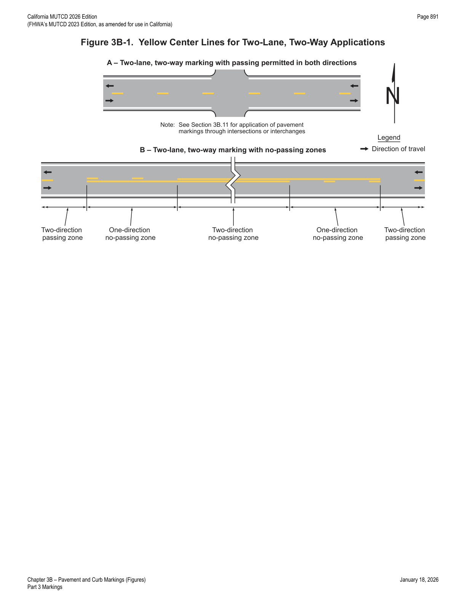
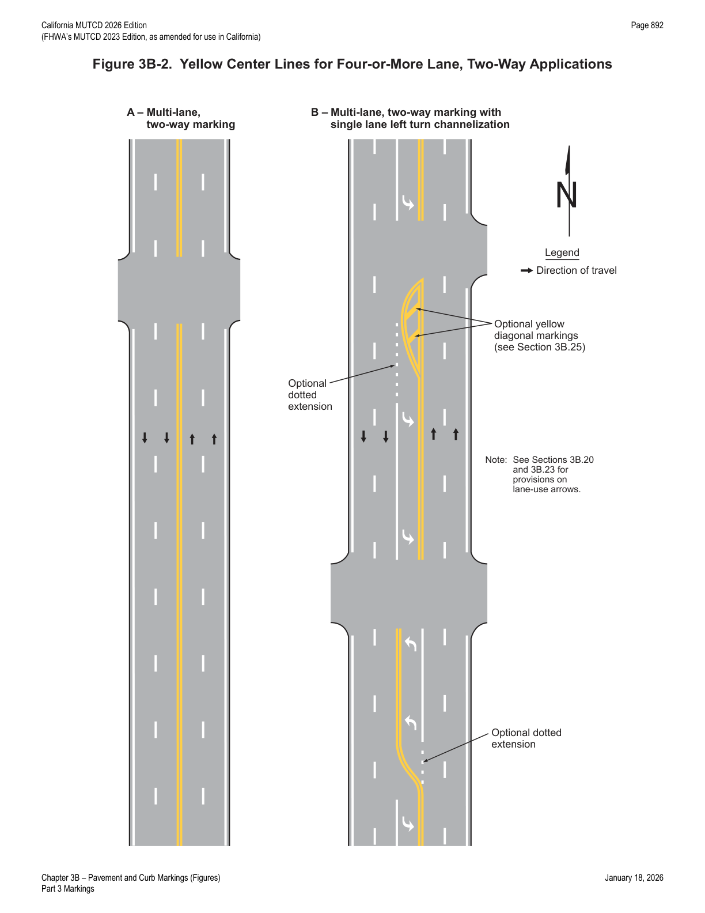
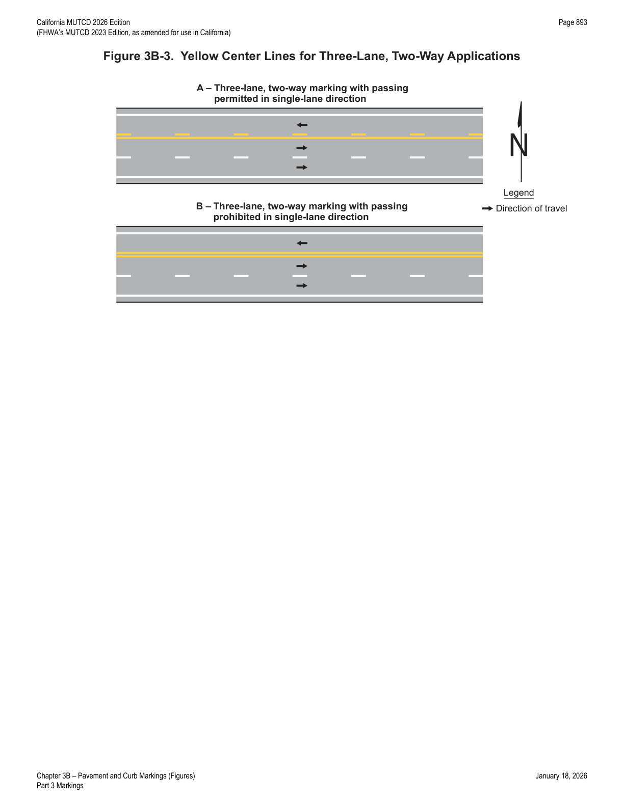
3B.02Warrants for Yellow Center Lines
- 01Center line markings shall be placed on all paved undivided two-way urban arterials and collectors that have a traveled way of 20 feet or more in width and an ADT of 6,000 vehicles per day or greater. Center line markings shall also be placed on all paved undivided two-way streets or highways that have three or more lanes for moving motor vehicle traffic.
- 02Center line markings should be placed on paved urban arterials and collectors that have a traveled way of 20 feet or more in width and an ADT of 4,000 vehicles per day or greater. Center line markings should also be placed on all rural arterials and collectors that have a traveled way of 18 feet or more in width and an ADT of 3,000 vehicles per day or greater. Center line markings should also be placed on other traveled ways where an engineering study indicates such a need.
- 03Engineering judgment should be used in determining whether to place center line markings on traveled ways that are less than 16 feet wide because of the potential for traffic encroaching on the pavement edges, traffic being affected by parked vehicles, and traffic encroaching into the opposing traffic lane.
- 04Center line markings may be placed on other paved two-way traveled ways that are 16 feet or more in width.
- 05If a traffic count is not available, the ADTs described in this Section may be estimates that are based on engineering judgment.
- 06Centerline patterns shall be selected from those shown in Figures 3A-101(CA) and 3A-104(CA).
- 07Raised retroreflective pavement markers shall be used to supplement the centerline markings on State highways. If used in snow areas, they shall be recessed.
- 08Raised retroreflective pavement markers may be used to supplement the centerline markings on highways and conventional roads.
- 09On horizontal curves with radii less than 3280 feet and without street lighting, Detail 22 instead of Detail 21 can be helpful in improving the delineation for centerline markings, as it includes retroreflective raised pavement markers. Detail 22 can be applied in advance of the approach to the curve per Table 2C-3 and continued throughout the length of the curve.
- 10Refer to CVC § 21460 for Double Lines.
- 11Refer to CVC § 21460.5 for Two-Way Left-Turn Lanes.
- 12A left edge line shall consist of a solid yellow line of 4 to 6 inches wide for local streets and roads and 6 inches wide on the State Highway System, yellow reflective pavement markers, yellow-red retroreflective markers, or a combination of line and markers as shown in Figure 3A-105(CA).
- 13Two normal solid yellow lines may be used as a left edge line on a divided roadway for more emphasis when motorists tend to use the shoulder for a through lane or where encroachments onto the shoulder occasionally occur.
- 14Left edge line patterns for median islands are shown in Figure 3A-107(CA).
- 15When a passing lane is provided, a two-direction no passing marking (refer to Figure 3A-104(CA)) shall be used when the Average Daily Traffic (ADT) exceeds 3,000. Refer to Figure 3B-104(CA).
- 16Passing in both directions may be provided by alternating the direction of the middle lane at about 1 mile intervals.
- 17A one-direction no passing marking (refer to Figure 3A-103(CA)) with one or more YIELD TO UPHILL TRAFFIC (R55(CA)) signs may be used when the ADT is 3,000 or less.
In practice: the center-line warrant thresholds step down from mandatory (20 ft / 6,000 ADT urban) to recommended (20 ft / 4,000 ADT urban, 18 ft / 3,000 ADT rural) to discretionary (16 ft, any ADT) — engineering judgment governs below 16 feet because of edge encroachment and parked-vehicle conflicts.
3B.03No-Passing Zone Pavement Markings
- 01No-passing zones shall be marked by either the one-direction no-passing zone pavement markings or the two-direction no-passing zone pavement markings described in Section 3B.01 and shown in Figures 3B-1 and 3B-3.
- 02No-passing zone markings shall be used on: (A) two-way roadways at lane-reduction transitions (see Section 3B.12), (B) approaches to obstructions that must be passed on the right (see Section 3B.13), (C) approaches to grade crossings (see Section 8C.02), and (D) approaches to crosswalks.
- 03On two-way, two-lane or three-lane roadways where center line markings are installed, no-passing zones shall be established at vertical and horizontal curves and other locations where an engineering study indicates that passing must be prohibited because of inadequate sight distances or other special conditions.
- 04On roadways with center line markings, no-passing zone markings shall be used at horizontal or vertical curves where the passing sight distance is less than the minimum shown in Table 3B-1 for the 85th-percentile speed or the speed limit.
| 85th-Percentile Speed or Speed Limit | Minimum Passing Sight Distance |
|---|---|
| 25 mph | 450 feet |
| 30 mph | 500 feet |
| 35 mph | 550 feet |
| 40 mph | 600 feet |
| 45 mph | 700 feet |
| 50 mph | 800 feet |
| 55 mph | 900 feet |
| 60 mph | 1,000 feet |
| 65 mph | 1,100 feet |
| 70 mph | 1,200 feet |
Table 3B-1. Minimum Passing Sight Distances for No-Passing Zone Markings
- 05The passing sight distance on a vertical curve is the distance at which an object 3.5 feet above the pavement surface can be seen from a point 3.5 feet above the pavement (see Figure 3B-4). Similarly, the passing sight distance on a horizontal curve is the distance measured along the center line (or right-hand lane line of a three-lane roadway) between two points 3.5 feet above the pavement on a line tangent to the embankment or other obstruction that cuts off the view on the inside of the curve (see Figure 3B-4).
- 06The upstream end of a no-passing zone at point "a" in Figure 3B-4 is that point where the sight distance first becomes less than that specified in Table 3B-1. The downstream end of the no-passing zone at point "b" in Figure 3B-4 is that point at which the sight distance again becomes greater than the minimum specified.
- 07Where the distance between successive no-passing zones is less than 400 feet, no-passing zone markings should connect the zones.
- 07aIf the gap between successive no-passing zones is less than the sight distance for the prevailing speed shown in Table 3B-1, or 400 feet, whichever is greater, the no-passing zone shall be continuous.
- 08No-passing zone signs (see Sections 2B.36, 2B.37, and 2C.53) are sometimes used to emphasize the existence and extent of a no-passing zone.
- 09On three-lane roadways where the direction of travel in the center lane transitions from one direction to the other, a no-passing buffer zone, consisting of a flush median island (see Section 3J.03) at least 50 feet in length, shall be provided in the center lane as shown in Figure 3B-5. A lane-reduction transition (see Section 3B.12) shall be provided approaching each end of the buffer zone.
- 10Refer to CVC §§ 21750 through 21759 for overtaking and passing.
- 11Refer to CVC § 21460 for Double Lines.
- 12CVC § 21752 restricts passing (driving on the left side of a two-way roadway) when approaching within 100 feet of or when traversing any intersection or railroad grade crossing. CVC § 21752 also restricts passing (driving on the left side of a two-way roadway) when the view is obstructed upon approaching within 100 feet of any bridge, viaduct, or tunnel. The patterns and policy for intersection markings are shown in Figure 3A-109(CA).
- 13No-passing zone patterns shall be selected from those shown in Figures 3A-103(CA) and 3A-104(CA).
- 14The no-passing zone markings at intersections, when used, should be between 100 feet and 300 feet in length at the approach to an intersection and placed in a pattern as shown in Figure 3A-109(CA).
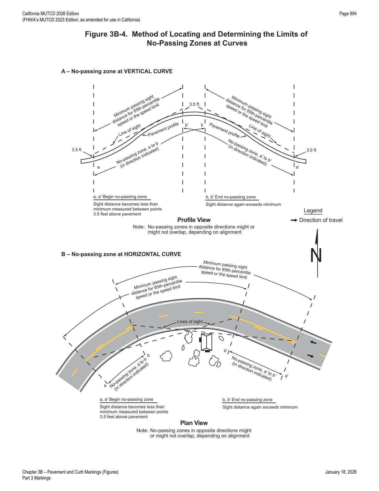
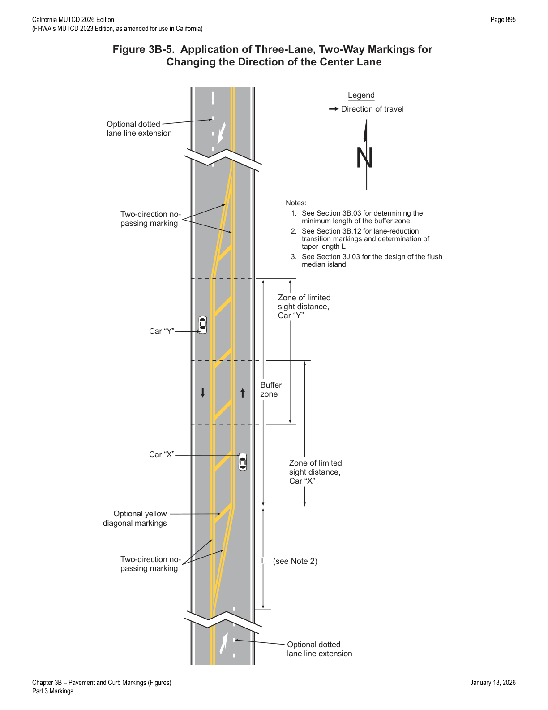
3B.04Yellow Pavement Markings for Reversible Lanes
- 01If reversible lanes are used, the lane line pavement markings on each side of reversible lanes shall consist of a normal width broken double yellow line to delineate the edge of a lane in which the direction of travel is reversed from time to time, such that each of these markings serve as the center line markings of the roadway during some period (see Figure 3B-6).
- 02Signs (see Section 2B.34), lane-use control signals (see Chapter 4T), or both shall be used to supplement reversible lane pavement markings.
- 03Section 3E.02 contains additional applications of pavement markings for counter-flow preferential lanes that also operate as reversible lanes.
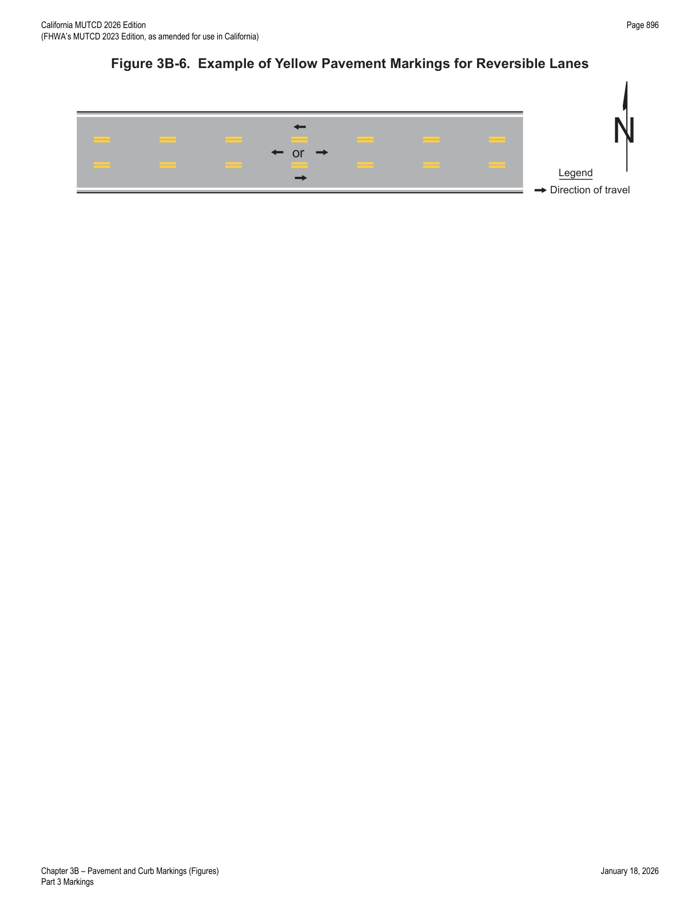
3B.05Pavement Markings for Two-Way Left-Turn Lanes
- 01If a two-way left-turn lane that is never operated as a reversible lane is used, the lane line pavement markings on each side of the two-way left-turn lane shall consist of a normal width broken yellow line and a normal width solid yellow line to delineate the edges of a lane that can be used by traffic in either direction as part of a left-turn maneuver. These markings shall be placed with the broken line toward the two-way left-turn lane and the solid line toward the adjacent traffic lane as shown in Figure 3B-7.
- 02White two-way left-turn lane-use arrows should be used at or just downstream from the beginning of a two-way left-turn lane.
- 03Additional two-way left-turn lane-use arrow markings may be used at other locations along a two-way left-turn lane where engineering judgment determines that such additional markings are needed to emphasize the proper use of the lane.
- 04A single-direction lane-use arrow shall not be used in a lane bordered on both sides by yellow two-way left-turn lane longitudinal markings.
- 05Signs should be used in conjunction with the two-way left-turn markings (see Section 2B.32).
- 06Two-way left-turn lane markings should not extend to intersections (see definition in Section 1C.02).
- 07Two-way left-turn lanes may be transitioned to mandatory left-turn lanes as shown in Figure 3B-7 or painted median islands where they approach an intersection.
- 08Section 8A.06 contains guidance information for discontinuing a two-way left-turn lane in the immediate vicinity of a highway-rail or highway-LRT grade crossing.
- 09On State highways, reversible lanes shall be separated by physical barriers or delineators.
- 10A two-way left-turn lane is a lane reserved in the center of a highway for exclusive use of left or U-turning vehicles. Refer to CVC § 21460.5. It is normally used where there are many points of access.
- 11The two-way left-turn lane markings shall be selected from those shown in Figures 3B-7 and 3A-108(CA).
- 12Optional treatments at signalized, major, and minor intersections, as shown in Figure 3B-7(CA), may be used.
- 13Two-way opposing pavement arrows may be used as shown in Figure 3B-7(CA). The arrows may be supplemented by a Two-Way Left Turn Lane (R3-9a or R3-9b) sign at new installations and problem locations.
- 14A gap in the markings should be made at all intersections.
- 15For left turn channelization, refer to Figure 3B-101(CA) and Caltrans' Highway Design Manual, Section 405.2. Refer to Section 1A.11 for information regarding this publication.
- 16Channelized left-turn lanes in combination with continuous raised-curb medians are used instead of two-way left-turn lanes (TWLTL) if one or more of the following conditions exist: (A) average daily traffic volumes exceed 20,000 vehicles per day; (B) for remediation where there is a demonstrated crash problem; (C) wherever a need is demonstrated through engineering study.
- 17Refer to CVC § 21460.5 for Two-Way Left-Turn Lanes.
- 18For details of two-way left-turn lanes, refer to Figure 3B-7(CA). For left turn channelization, refer to Figure 3B-101(CA) and Caltrans' Highway Design Manual, Section 405.2. Refer to Section 1A.05 for information regarding this publication.
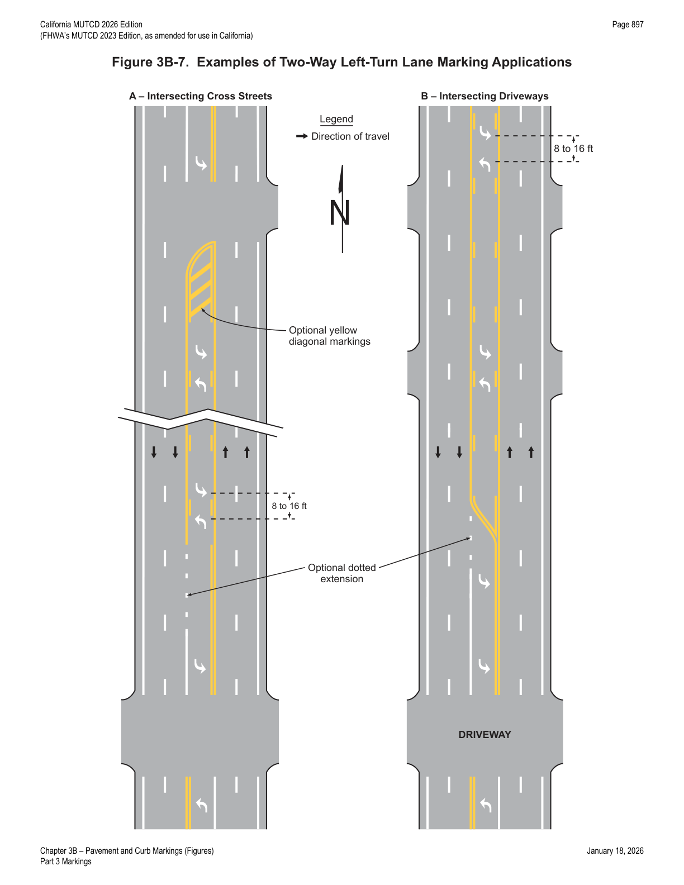
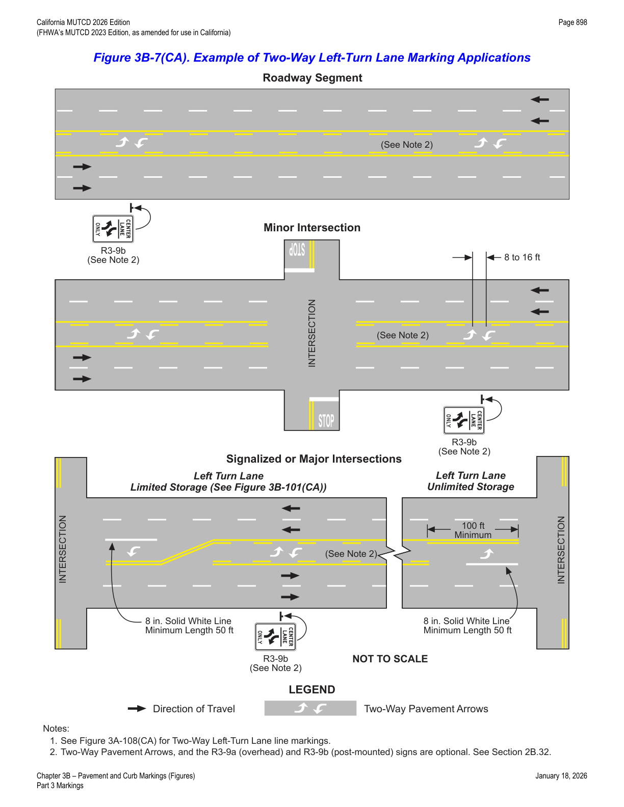
3B.06White Lane Line Pavement Markings
- 01When used, lane line pavement markings delineating the separation of traffic lanes that have the same direction of travel shall be white.
- 02Lane line markings shall be used on all freeways and Interstate highways.
- 03Lane line markings should be used: (A) on all roadways that are intended to operate with two or more adjacent traffic lanes in the same direction of travel, except as otherwise required for reversible lanes; (B) at congested locations where the roadway will accommodate more traffic lanes with lane line markings than without the markings.
- 05Except as provided in Paragraph 1 of Section 3B.07, where crossing the lane line markings with care is not discouraged or prohibited, the lane line markings shall consist of a normal width broken white line.
- 06Where crossing the lane line markings is discouraged, the lane line markings shall consist of a normal width solid white line.
- 07A solid white lane line marking should be used on approaches to: (A) intersections to separate a through lane from a mandatory turn lane; (B) intersections to separate contiguous mandatory turn lanes from each other; (C) toll collection points to separate toll lanes, payment methods, channelized movements, or obstructions.
- 08Solid white lane line markings may be used: (A) on approaches to intersections to separate contiguous through lanes; (B) to separate through traffic lanes from auxiliary lanes, such as an added uphill truck lane; (C) on approaches to crosswalks across multi-lane roadways.
- 09Wide solid lane line markings may be used for greater emphasis.
- 10A curved transition may be used where an edge line, channelizing line, or dotted extension line changes direction.
- 11Examples of locations where a curved transition can have value include freeway exit and entrance ramps, and turn lanes.
- 12Where crossing the lane line markings is prohibited, the lane line markings shall consist of a double solid white line (see Figure 3B-8).
- 13Lane line patterns shall be selected from those shown in Figure 3A-102(CA). Detail 9 or 10 (40 mph or less) or Detail 12, 12A, or 13 (45 mph or more) shall be used on freeways, expressways, freeway ramps, freeway to freeway connectors and collector roads, except when used in snow areas, the raised pavement markers, if used, shall be recessed; otherwise, use Detail 8 or 11.
- 14When a climbing lane is provided on an upgrade and truck lane control signs are used (refer to Section 2B.38), an 8-inch solid white line shall be used in place of the standard lane line stripe.
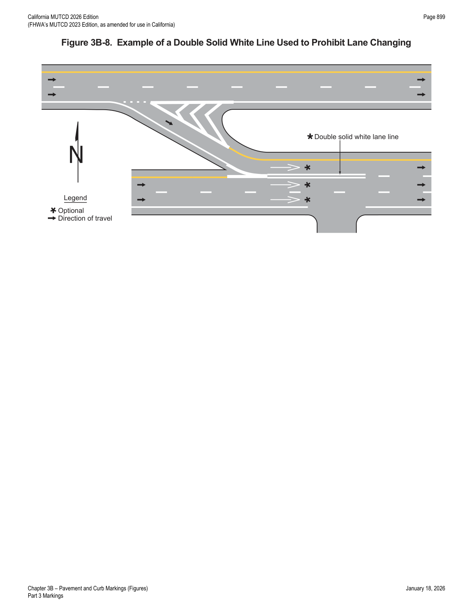
3B.07White Lane Line Markings for Non-Continuing Lanes
- 01A normal width dotted white line marking shall be used as the lane line to separate a through lane that continues beyond the interchange or intersection from an adjacent deceleration or acceleration lane.
- 02For exit ramps with a parallel deceleration lane, a normal width dotted white lane line extension shall be installed from the upstream end of the taper to the theoretical gore or to the upstream end of a solid white lane line, if used, that extends upstream from the theoretical gore as shown in Drawings A and C in Figure 3B-9.
- 03For an exit ramp with a tapered deceleration lane, a normal width dotted white line extension shall be installed from the theoretical gore through the taper area such that it meets the edge line at the upstream end of the taper as shown in Drawing B in Figure 3B-9.
- 04For entrance ramps with a parallel acceleration lane, a normal width dotted white lane line shall be installed from the theoretical gore or from the downstream end of a solid white lane line, if used, that extends downstream from the theoretical gore, to a point at least one-half the distance from the theoretical gore to the downstream end of the acceleration taper, as shown in Drawing A in Figure 3B-10 and 3B-10(CA) Sheet 2 of 2.
- 05For entrance ramps with a parallel acceleration lane, a normal width dotted white line extension may be installed from the downstream end of the dotted white lane line to the downstream end of the acceleration taper, as shown in Drawing A in Figure 3B-10 and 3B-10(CA) Sheet 2 of 2.
- 06For entrance ramps with a tapered acceleration lane, a normal width dotted white line extension may be installed from the downstream end of the channelizing line adjacent to the through lane to the downstream end of the acceleration taper, as shown in Drawings B and C in Figure 3B-10 and 3B-10(CA) Sheet 1 of 2.
- 06aWhite chevron markings (refer to Section 3B.25) shall be placed in the neutral area of exit ramp gores.
- 07A wide dotted white lane line shall be used: (A) as a lane drop marking in advance of lane drops at exit ramps to distinguish a lane drop from a normal exit ramp (see Drawings A, B, and C in Figure 3B-11); (B) in advance of freeway route splits with dedicated lanes (see Drawing D in Figure 3B-11); (C) in advance of freeway route splits with an option lane (see Drawing E in Figure 3B-11); (D) to separate a through lane that continues beyond an interchange from an adjacent continuous auxiliary lane between an entrance ramp and an exit ramp (see Drawing F in Figure 3B-11 and Figure 3B-11(CA) Sheet 1 of 2); (E) as a lane drop marking in advance of lane drops at intersections to distinguish a lane drop from an intersection through lane (see Drawing A in Figure 3B-12); and (F) to separate a through lane that continues beyond an intersection from an adjacent auxiliary lane between two intersections (see Drawing B in Figure 3B-12).
- 08Lane drop markings used in advance of lane drops at freeway and expressway exit ramps should begin at least ½ mile in advance of the theoretical gore. If the dropped lane is an auxiliary lane 1/2 mile or less in length, the lane drop line should extend throughout the entire length.
- 09On the approach to a multi-lane exit ramp having an optional exit lane that also carries through traffic, lane line markings should be used as illustrated in Drawing B in Figure 3B-11.
- 10Lane drop markings used in advance of lane drops at intersections should begin a distance in advance of the intersection that is determined by engineering judgment as suitable to enable drivers who do not desire to make the mandatory turn to move out of the lane being dropped prior to reaching the queue of vehicles that are waiting to make the turn. The lane drop markings should begin no closer to the intersection than the most upstream regulatory or warning sign associated with the lane drop.
- 11The dotted white lane lines that are used for lane drop markings and that are used as a lane line separating through lanes from auxiliary lanes should consist of line segments that are 3 feet in length separated by 9-foot gaps.
- 11aThe lane drop line pattern shall be as shown in Figure 3A-111(CA).
- 11bRefer to Figures 3A-111(CA), 3B-9(CA), 3B-10(CA), 3B-14(CA) and 3B-104(CA) for further details of markings and signing.
- 11cAn 8-inch wide single solid white line preceded by an 8-inch wide dotted white line may be placed in advance of an intersection where the outside lane is dropped at the intersection, and as a result, creates a mandatory turn lane.
- 11dIf used, diagonal lines shall be the same color as the edge line.
- 12Sections 3B.21 and 3B.23 contain information regarding other markings that are associated with lane drops, such as ONLY word pavement markings and lane-use arrows.
- 13Section 3B.12 contains information about the lane line markings that are to be used for transition areas where the number of through lanes is reduced at a location that is not at an interchange or intersection.
- 14In the case of a lane drop at an exit ramp or intersection, a solid white line may replace a portion, but not all of the length, of the wide dotted white lane line.
- 15Left-turn or right-turn lanes shall be separated from the through lanes by a single solid 8-inch-wide white line as shown in Figure 3A-112(CA) except as provided in Paragraph 16.
- 16Left-turn or right-turn lanes may be separated from the through lanes by multiple solid 8-inch-wide white lines or two longitudinal solid 8-inch-wide lines with diagonal lines used for crosshatch markings.
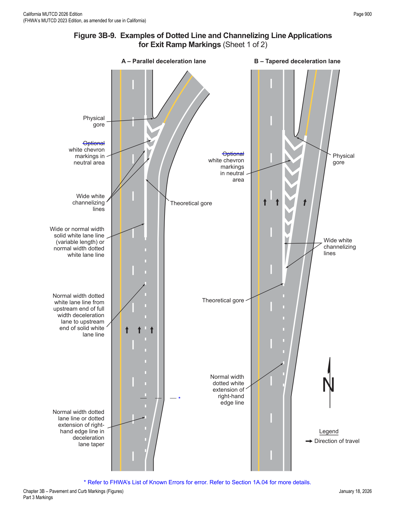
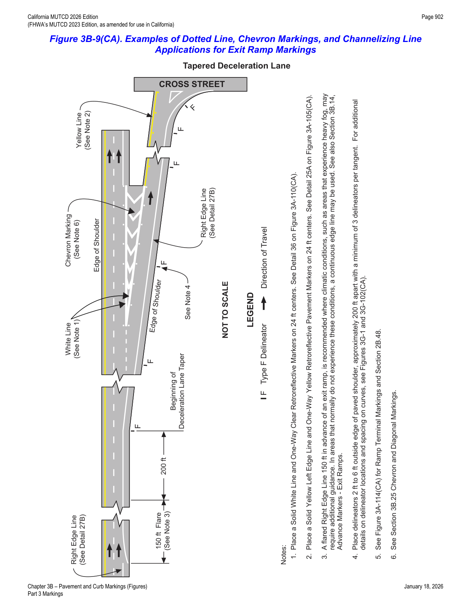
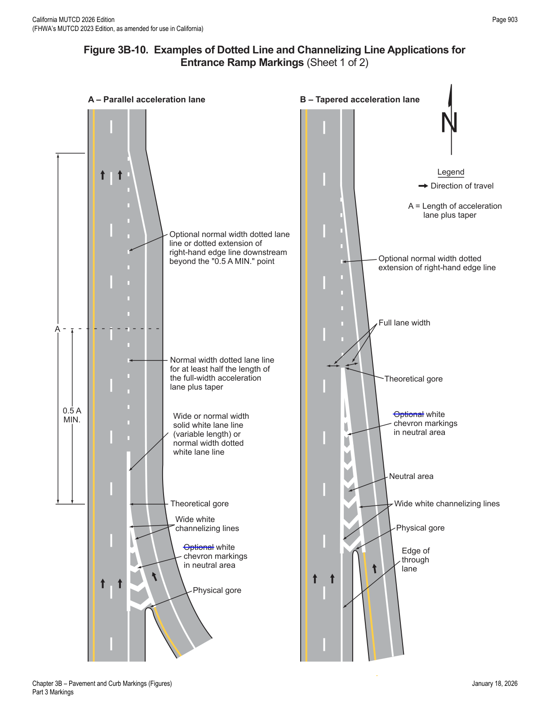
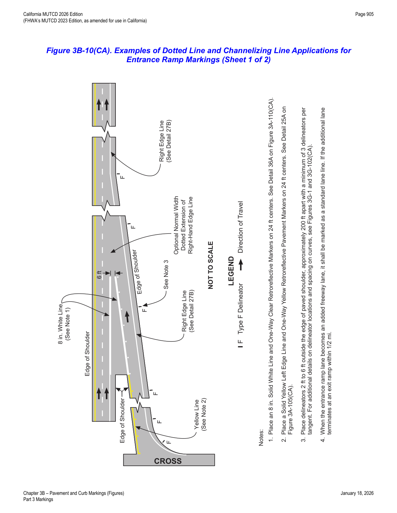
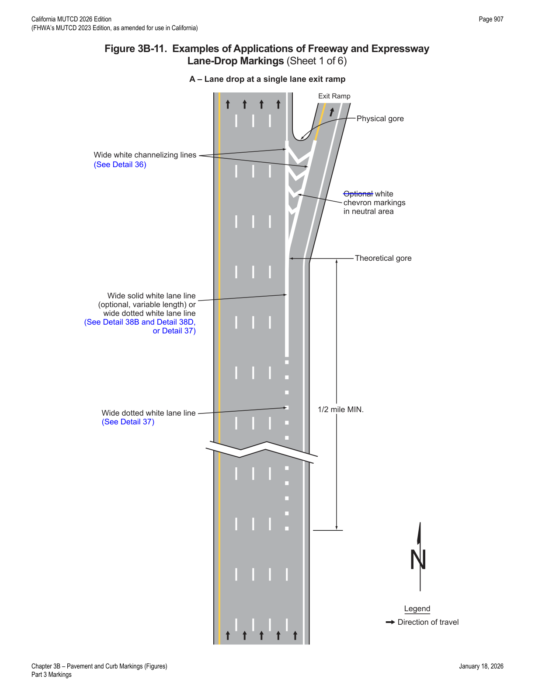
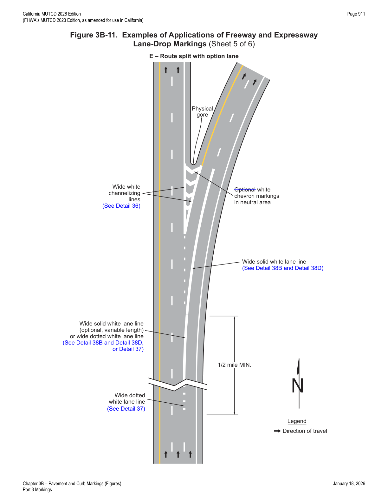
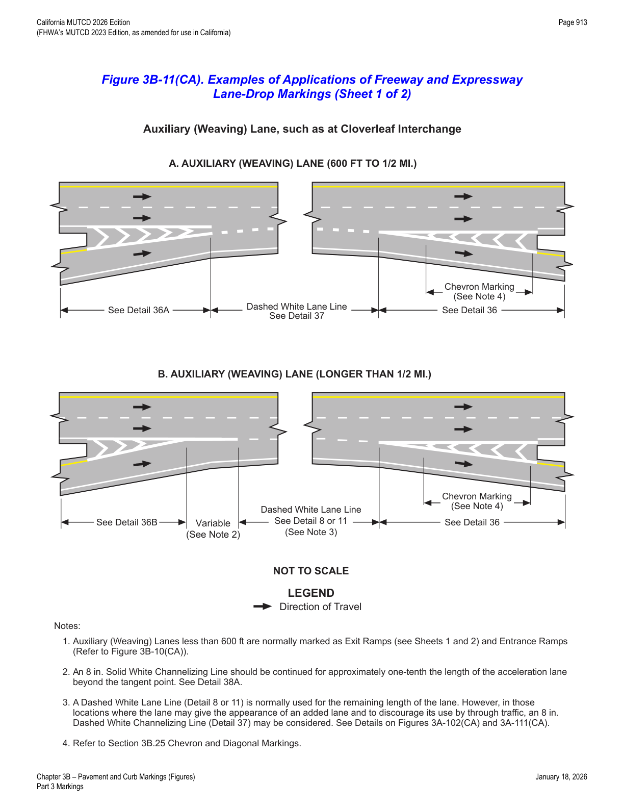
3B.08Channelizing Lines
- 01Channelizing lines are used to form neutral areas where traffic traveling in the same general direction is permitted on both sides including entrance and exit ramps, access and egress points to and from managed lanes, toll-plaza bypasses, and left-turn lanes separated from through lanes. Channelizing lines are also sometimes used to alter travel paths for speed management or other purposes.
- 02Chapter 3J contains information for the application of channelizing lines used in conjunction with islands.
- 03Except as provided in Section 3E.04 and Paragraph 6 of Section 3J.05, a channelizing line shall be a solid wide or double solid white line.
- 05For all exit ramps and for entrance ramps with parallel acceleration lanes, channelizing lines shall be placed on both sides of the neutral area (see Figures 3B-9 and 3B-11, 3B-9(CA), 3B-10(CA) Sheet 2 of 2, and Drawing A in Figure 3B-10).
- 06For entrance ramps with tapered acceleration lanes, channelizing lines shall be placed along both sides of the neutral area to a point at least one-half of the distance to the theoretical gore (see Drawing C in Figure 3B-10 and Figure 3B-10(CA) Sheet 1 of 2).
- 07Channelizing lines shall be placed on both sides of the neutral area for bifurcations created from open-road tolling lanes that bypass a conventional toll plaza.
- 08Where neutral areas are formed at access and egress points to and from a managed-lane facility, channelizing lines shall be placed on both sides of the neutral area (see Figures 2G-8, 2G-10, 2G-13, 2G-16, 2G-22, 2G-23, 2G-27, and 2G-28).
- 10Other pavement markings in the neutral area shall be white.
- 11Pavement markings within the neutral area include chevron markings (see Section 3B.25), retroreflective raised pavement markers (see Section 3B.16), and internally illuminated raised pavement markers (see Section 3B.16).
3B.09Edge Line Pavement Markings
- 01If used, edge line pavement markings shall delineate the right or left edges of a roadway.
- 02Except as provided in Section 3E.04, right edge line pavement markings, if used, shall consist of a normal width solid white line to delineate the right-hand edge of the roadway.
- 03If used on the roadways of divided highways or one-way streets, or on any ramp in the direction of travel, left edge line pavement markings shall consist of a normal width solid yellow line to delineate the left-hand edge of a roadway or to indicate driving or passing restrictions left of these markings, except as provided in Section 3E.04.
- 04Edge line markings provide visual references to guide road users during adverse weather and visibility conditions.
- 05Wide solid edge line markings may be used for greater emphasis.
- 06Increasing edge line width from 4 inches to at least 6 inches can be a beneficial countermeasure on all facility types in both urban and rural areas.
- 07Edge line markings should not be continued through intersections, except for the following situations: (A) dotted edge line extensions (see Section 3B.11), or (B) through that part of an intersection with no intersection approach (such as the far side of a T-intersection).
- 08Section 3B.11 contains information on the use and application of edge lines through intersections, interchanges, and driveways.
- 09A right edge line shall consist of a solid white line of 4 to 6 inches for local streets and roads, and 6 inches on the State Highway System.
- 10The edge line should be placed 2 inches in from the edge of the traveled way, approximately 12 feet from the lane line or centerline on highway mainlines, ramps, and connectors. Refer to Figure 3A-106(CA).
- 11Generally, the solid edge line should be dropped at the beginning of intersection flares.
- 12In heavy fog areas, or locations where additional guidance would be beneficial, a dotted 4-inch-wide white right-edge line may be continued across an intersection.
- 13Edge line is not used at turnouts. Refer to Figure 3B-105(CA).
- 14Exit and entrance ramps, including freeway connectors, shall be marked with a yellow edge line supplemented with yellow-red reflective pavement markers on the left and a white edge line on the right. Refer to Figure 3A-105(CA).
- 15Exit ramps shall be further supplemented with enhanced reflective pavement marker spacings on the right and left edge lines. Enhanced blank-red pavement marker spacings shall be used at a closely spaced pattern on white right edge lines, and enhanced yellow-red reflective pavement marker spacing shall be used at a closely spaced pattern on yellow left edge lines. Refer to Figure 3A-114(CA).
- 16If used, the enhanced spacing retroreflective pavement markers should be placed at a minimum of 120 feet from the ramp terminus. The spacing should be 12 feet, typical for 240 feet, and 6 feet, typical for an additional 120 feet. Refer to Figure 3A-114(CA).
- 17When the blank-red retroreflective pavement markers are placed along the white right edge line, the side that is visible to traffic proceeding in the wrong direction shall be red, and the side visible to approaching traffic shall be blank.
In practice: the exit-ramp enhanced marker spacing (120 ft minimum from the ramp terminus, then 12-ft centers for 240 ft, then 6-ft centers for another 120 ft) is one of the most specific dimensional call-outs in this chapter and is a common wrong-way-crash countermeasure detail engineers pull directly from Figure 3A-114(CA).
3B.10Warrants for Use of Edge Lines
- 01Edge line markings shall be placed on paved streets or highways with the following characteristics: (A) freeways, (B) expressways, and (C) rural arterials with a traveled way of 20 feet or more in width and an ADT of 6,000 vehicles per day or greater.
- 02Edge line markings should be placed on paved streets or highways with the following characteristics: (A) rural arterials and collectors with a traveled way of 20 feet or more in width and an ADT of 3,000 vehicles per day or greater; (B) on other paved streets and highways where an engineering study indicates a need for edge line markings.
- 03Edge line markings should not be placed where an engineering study or engineering judgment indicates that providing them is likely to decrease safety for all road users.
- 04Edge line markings may be placed on streets and highways with or without center line markings.
- 05Edge line markings may be excluded, based on engineering judgment, for reasons such as if the traveled way edges are delineated by curbs, parking, or other markings.
- 06If a bicycle lane is marked on the outside portion of the traveled way, the edge line that would mark the outside edge of the bicycle lane may be omitted.
- 07Edge line markings may be used where edge delineation is desirable to minimize unnecessary driving on paved shoulders or on refuge areas that have lesser structural pavement strength than the adjacent roadway.
- 08Edge lines shall be used on all State highways, except urban-type streets with curbs and parking provisions.
- 09The Two-Way Traffic (W6-3) sign may be used in conjunction with edge lines at locations where road users could perceive that they are on a one-way roadway when, in fact, they are on a two-lane, two-way highway. Refer to Section 2C.51 for the W6-3 sign.
3B.11Application of Pavement Markings Through Intersections or Interchanges
- 01Pavement markings extended into or continued through an intersection or interchange area shall be the same color as the line markings they extend (see Figure 3B-13).
- 02Pavement markings extended into or continued through an intersection or interchange area should be at least the same width as the line markings they extend.
- 03Where highway design or reduced visibility conditions make it desirable to provide control or to guide vehicles through an intersection or interchange, such as at offset, skewed, complex, or multi-leg intersections, on curved roadways, where multiple turn lanes are used, or where offset left-turn lanes might cause driver confusion, dotted lane line extension markings consisting of 2-foot line segments and 2-foot to 6-foot gaps should be used to extend longitudinal line markings through an intersection or interchange area.
- 04Where greater restriction is preferred, solid lane lines or channelizing lines should be extended into or continued through intersections.
- 05Extensions of center lines through intersections shall be dotted lines.
- 06Where a double line is extended through an intersection, a single line of equal width to one of the lines of the double line should be used.
- 07Solid lines shall not be used to extend edge lines into or through intersections except through that part of an intersection with no intersecting approach (such as at the far side of a T-intersection).
- 08Edge line markings should be discontinued across intersecting approaches at intersections or interchanges.
- 09Driveways that do not meet the definition of an intersection (see Section 1C.02) should have edge line markings maintained across the intersecting approach of the driveway.
- 10Dotted edge line extensions may be placed through intersections.
- 11Section 3B.31 contains information about edge lines through diverging diamond interchanges with a transposed alignment crossroad.
- 12Section 3D.03 provides information for edge lines through roundabouts.
- 13Section 5B.02 contains information on edge line extensions for driving automation system considerations.
- 14Section 8C.05 contains information about the extension of edge lines through grade crossing areas.
- 15Section 9E.03 contains information for the extensions of bicycle lanes through intersections.
- 16Refer to Figure 3A-112(CA), Detail 40 and 40A for lane line extensions.
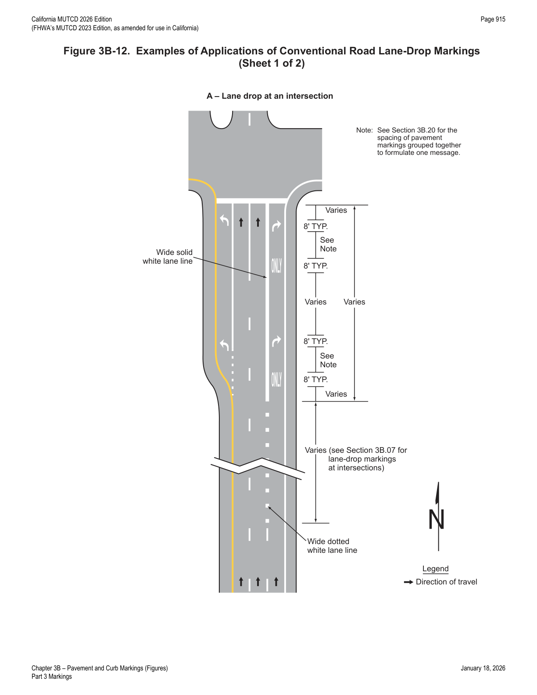
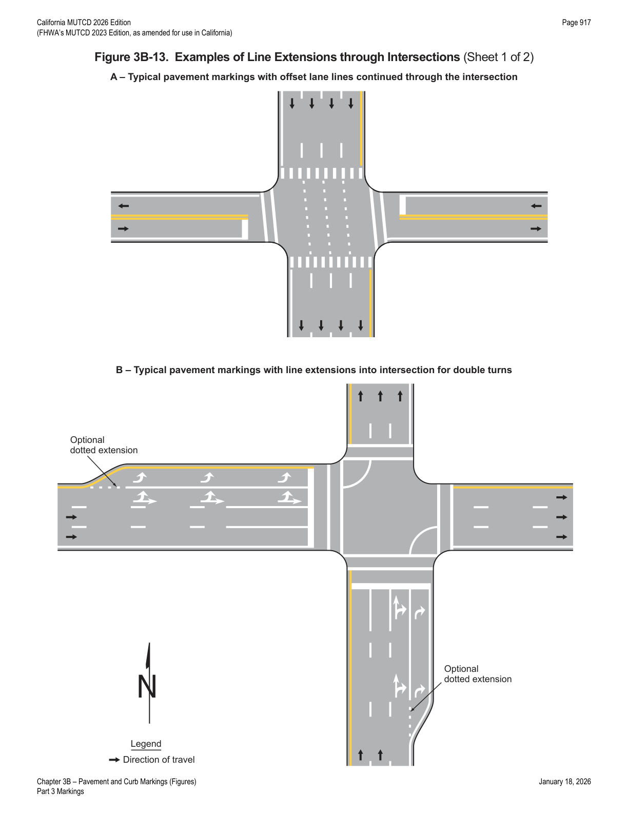
3B.12Lane-Reduction Transitions
- 01A lane-reduction is where the number of through lanes is reduced at a location that is not at an interchange or intersection because of narrowing of the roadway or because of a section of on-street parking in what would otherwise be a through lane.
- 02Section 3B.07 contains information on pavement markings for lane drops and splits.
- 03Section 2C.47 contains information for warning signing used for lane reductions.
- 04Lane-reduction transitions (see Figure 3B-14 and 3B-14(CA)) shall include the following elements: (A) a no-passing zone (see Section 3B.03) to prohibit passing in the direction of the convergence and through the transition area except where not applicable such as one-way streets, expressways, and freeways; and (B) an edge line (see Section 3B.09) in the direction of the convergence and through the transition area, except as provided in Paragraph 6 of this Section.
- 05Except as provided in Paragraph 6 of this Section, the edge line marking should be installed from the location of the Lane Ends warning sign to beyond the beginning of the narrower roadway.
- 06On roadways with operating speeds less than 25 mph where curbs clearly define the roadway edge in the lane-reduction transition, or where a through lane becomes a parking lane, the edge line may be omitted as determined by engineering judgment.
- 07Lane-reduction transitions should include the following elements: (A) delineators installed adjacent to the lane or lanes reduced for the full length of the transition and should be so placed and spaced (see Section 3G.04) to show the reduction except as provided in Paragraph 13 of this Section and except as provided in Paragraph 2 of Section 3G.03 for freeways and expressways; (B) lane-reduction arrow markings (see Drawing F in Figure 3B-21) on the roadway with a speed limit of 45 mph or more; and (C) a termination of the broken white lane line at a point that is ¼ of the advance placement distance (see Section 2C.04) between the Lane Ends sign (see Section 2C.47) and the point where the transition taper begins.
- 07aRefer to FHWA's List of Known Errors for error in Paragraph 07, Item B text. Refer to Section 1A.04 for more details.
- 08For roadways having a speed limit of 45 mph or greater, the transition taper length for a lane-reduction transition should be computed by the formula L = WS, where L equals the taper length in feet, W equals the width of the offset distance in feet, and S equals the 85th-percentile speed or the speed limit in mph, whichever is higher. For roadways where the speed limit is less than 45 mph, the formula L = WS²/60 should be used to compute the taper length.
- 09The minimum lane reduction transition taper length should be 100 feet in urban areas and 200 feet in rural areas.
- 10Where observed speeds exceed speed limits, longer tapers should be used.
- 11The minimum taper length may be less than 100 feet on roadways where the operating speed is less than 25 mph.
- 12On new construction, where no speed limit has been established, the design speed may be used in the transition taper length formula.
- 13On low-speed urban roadways where curbs clearly define the roadway edge in the lane-reduction transition, or where a through lane becomes a parking lane, delineators may be omitted as determined by engineering judgment.
- 14Where a lane-reduction transition occurs on a roadway with a speed limit of less than 45 mph, lane-reduction arrow markings may be used.
- 15Lane-reduction arrow markings may be used in long acceleration lanes based on engineering judgment.
- 16A dotted white line may be used between the point where the broken white lane line is terminated to the point where the transition taper begins.
- 17Typical lane reduction transitions (four lane to two lane) and transitions from two lanes to four lanes are shown in Figure 3B-14(CA).
In practice: the taper-length formula switches at the 45 mph threshold — L = WS above 45 mph (linear with speed) versus L = WS²/60 below it (quadratic with speed) — and the 100 ft urban / 200 ft rural floors apply regardless of what the formula returns for very narrow offsets.
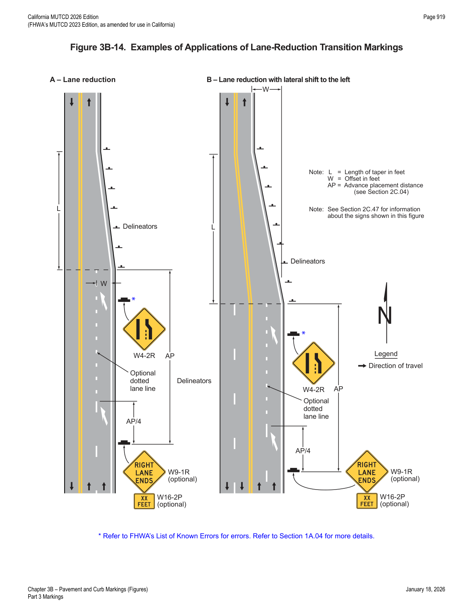
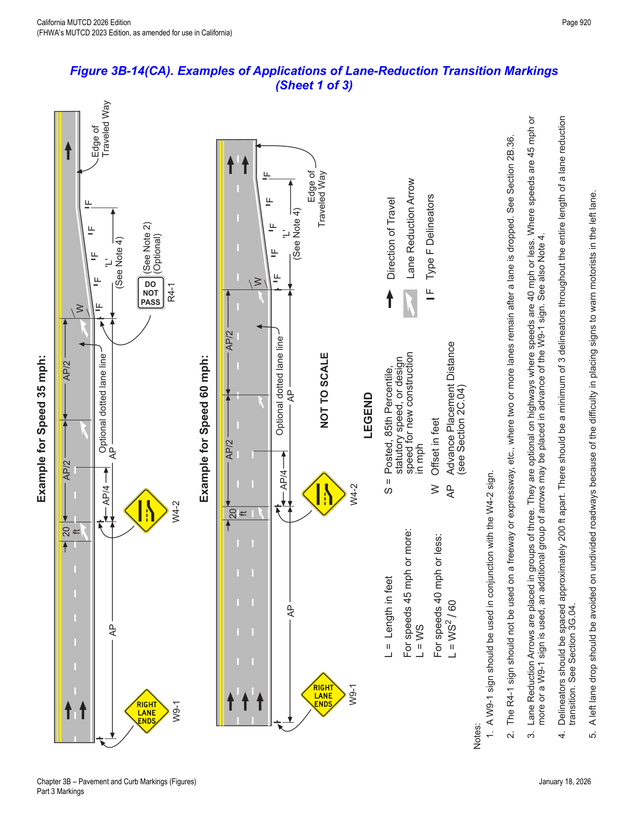
3B.13Approach Markings for Obstructions
- 01Pavement markings shall be used to guide traffic away from fixed obstructions within a paved roadway. Approach markings for bridge supports, refuge islands, median islands, toll plaza islands, and raised channelization islands shall consist of a tapered line or lines extending from the center line or the lane line to a point 1 to 2 feet to the right-hand side, or to both sides, of the approach end of the obstruction (see Figure 3B-15).
- 02For roadways having a speed limit of 45 mph or greater, the taper length of the tapered line markings should be computed by the formula L = WS, where L equals the taper length in feet, W equals the width of the offset distance in feet, and S equals the 85th-percentile speed or the speed limit, whichever is higher. For roadways where the speed limit is less than 45 mph, the formula L = WS²/60 should be used to compute the taper length.
- 03The minimum taper length should be 100 feet in urban areas and 200 feet in rural areas.
- 04The minimum taper length may be less than 100 feet on roadways where the operating speed is less than 25 mph.
- 05If traffic is required to pass only to the right of the obstruction, the markings shall consist of a two-direction no-passing zone marking at least twice the length of the diagonal portion as determined by the appropriate taper formula (see Drawing A in Figure 3B-15).
- 06If traffic is required to pass only to the right of the obstruction, yellow diagonal markings (see Section 3B.25) may be placed in the flush median islands (see Section 3J.03) between the no-passing zone markings as shown in Drawings A and B in Figure 3B-15.
- 07If traffic can pass either to the right or left of the obstruction, the markings shall consist of two channelizing lines diverging from the lane line, one to each side of the obstruction. In advance of the point of divergence, a wide solid white line or normal width double solid white line shall be extended in place of the broken lane line for a distance equal to the length of the diverging lines (see Drawing C in Figure 3B-15).
- 08If traffic can pass either to the right or left of the obstruction, additional white chevron markings (see Section 3B.25) may be placed in the flush neutral area between the channelizing lines as shown in Drawing C in Figure 3B-15. Other markings, such as white delineators, white channelizing devices, white raised pavement markers, and white crosswalk markings may also be placed in the flush neutral area.
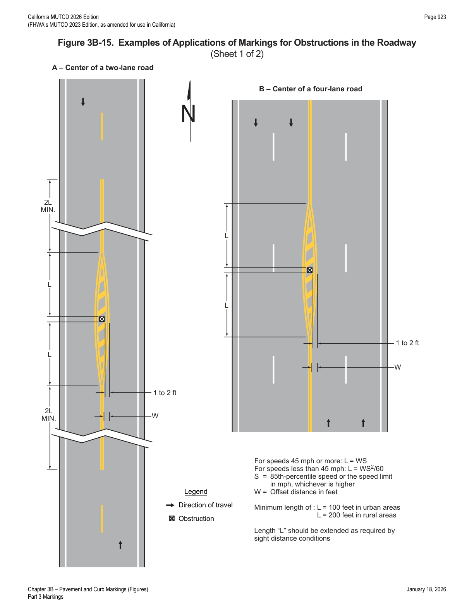
3B.14Raised Pavement Markers – General
- 01The color of raised pavement markers under both daylight and nighttime conditions shall conform to the color of the marking for which they serve as a positioning guide, or for which they supplement or substitute.
- 02The side of a raised pavement marker that is visible to traffic proceeding in the wrong direction may be red (see Section 3A.03).
- 03Retroreflective or internally illuminated raised pavement markers may be used in the roadway immediately adjacent to curbed approach ends of raised medians and curbs of islands, or on top of such curbs (see Section 3J.06).
- 04When used, internally illuminated raised pavement markers shall be steadily illuminated and shall not be flashed.
- 05Flashing raised pavement markers are considered to be In-Roadway Lights (see Chapter 4U).
- 05aRefer to FHWA's List of Known Errors for error in Paragraph 5 text. Refer to Section 1A.04 for more details.
- 06The spacing of raised pavement markers used to supplement or substitute for other types of longitudinal markings should correspond with the pattern of broken lines for which the markers supplement or substitute.
- 07The value of N cited in Sections 3B.15 through 3B.17 for the spacing of raised pavement markers shall equal the length of one line segment plus one gap of the broken lines used on the highway.
- 07aThe widths and patterns of raised pavement markers shall conform to the details shown in Figures 3A-101(CA) through 3A-114(CA). Refer to Section 3A.04.
- 08For additional emphasis, retroreflective raised pavement markers may be spaced closer than described in Sections 3B.15 through 3B.17, as determined by engineering judgment or engineering study.
- 09Section 9A.03 contains information for the application of raised pavement markers to bicycle facilities.
- 10Raised pavement markers are not normally placed where snowplows would damage the markers and require an unusual amount of replacement, unless recessed.
- 11When used in these areas, they should be recessed, as shown in Caltrans' Standard Plan A20-D. Refer to Section 1A.05 for information regarding this publication.
Advance Markers
- 12Advance Markers at exit ramps may be used to help motorists locate exit ramps in heavy fog areas.
- 13The Advance Markers consist of a 3-2-1 countdown pattern of one-way clear reflective pavement markers. The pattern consists of three markers placed on the right shoulder 2100 feet in advance of the neutral area (gore), two markers at 1400 feet, and one marker at 700 feet. The markers are placed on a line perpendicular to the lane line at 1-foot spacing, beginning 2 inches off the edge of the traveled way.
3B.15Raised Pavement Markers as Vehicle Positioning Guides with Other Longitudinal Markings
- 01Retroreflective or internally illuminated raised pavement markers may be used as positioning guides with longitudinal line markings without necessarily conveying information to the road user about passing or lane-use restrictions. In such applications, markers may be positioned in line with or immediately adjacent to a single line marking, or positioned between the two lines of a double center line or double lane line marking.
- 02Except as otherwise provided in Paragraphs 3 and 4 of this Section, the spacing for such applications should be 2N (see Section 3B.14).
- 03Where it is desired to alert the road user to changes in the travel path, such as on sharp curves or on transitions that reduce the number of lanes or that shift traffic laterally, the spacing may be reduced to N or less shown in Details 16, 17, 19, 20, 22 or 23 may be used.
- 04On freeways and expressways, the spacing may be increased to 3N for relatively straight and level roadway segments where engineering judgment indicates that such spacing will provide adequate delineation under wet night conditions.
- 05The widths and patterns of raised pavement markers shall conform to the details shown in Figures 3A-101(CA) through 3A-114(CA). Refer to Section 3A.04.
3B.16Raised Pavement Markers Supplementing Other Markings
- 01The use of retroreflective or internally illuminated raised pavement markers for supplementing longitudinal line markings should comply with the following: (A) Lateral Positioning — (1) when supplementing double line markings, pairs of raised pavement markers placed laterally in line with or immediately outside of the two lines should be used; (2) when supplementing wide line markings, pairs of raised pavement markers placed laterally adjacent to each other should be used. (B) Longitudinal Spacing — (1) when supplementing solid line markings, raised pavement markers at a spacing no greater than N (see Section 3B.14) should be used, except that when supplementing channelizing lines or edge line markings, a spacing of no greater than N/2 should be used; (2) when supplementing broken line markings, a spacing no greater than 3N should be used, except that when supplementing broken line markings identifying reversible lanes, a spacing of no greater than N should be used; (3) when supplementing dotted lane line markings, a spacing appropriate for the application should be used; (4) when supplementing longitudinal line extension markings through at-grade intersections, one raised pavement marker for each short line segment should be used; (5) when supplementing line extensions through freeway interchanges, a spacing of no greater than N should be used.
- 02Raised pavement markers should not supplement right-hand edge lines unless an engineering study or engineering judgment indicates the benefits of enhanced delineation of a curve or other location would outweigh possible impacts on bicyclists using the shoulder, and the spacing of raised pavement markers on the right-hand edge does not simulate a broken line during wet night conditions.
- 02aOne-way blank-red retroreflective raised pavement markers should supplement wrong-way arrows, limit lines/stop lines, yield lines, or crosswalk markings used at freeway exit ramps.
- 03Raised pavement markers also may be used to supplement other markings such as channelizing islands, gore areas, approaches to obstructions, or wrong-way arrows.
- 04To improve the visibility of horizontal curves, center lines may be supplemented with retroreflective or internally illuminated raised pavement markers for the entire curved section as well as for a distance in advance of the curve that approximates 5 seconds of travel time.
- 05The widths and patterns of raised pavement markers shall conform to the details shown in Figures 3A-101(CA) through 3A-114(CA). Refer to Section 3A.04.
- 06When the one-way blank-red retroreflective raised pavement markers are placed along the type V arrow, limit lines, yield lines, or crosswalk markings, the side that is visible to traffic proceeding in the wrong direction shall be red and the side visible to approach traffic shall be blank.
In practice: N is defined once (Section 3B.14, Paragraph 7) as one broken-line segment plus one gap, then reused as the unit for every raised-marker spacing rule in Sections 3B.15–3B.17 — supplementing a solid line uses N (or N/2 for channelizing/edge lines), supplementing a broken line uses 3N (or N for reversible lanes), and substituting for a broken line uses N/8.
3B.17Raised Pavement Markers Substituting for Pavement Markings
- 01Retroreflective or internally illuminated raised pavement markers, or non-retroreflective raised pavement markers supplemented by retroreflective or internally illuminated markers, may be substituted for markings of other types.
- 02If used, the pattern of the raised pavement markers should simulate the pattern of the markings for which they substitute.
- 03Non-retroreflective raised pavement markers shall not be used alone, without supplemental retroreflective or internally illuminated markers, as a substitute for other types of pavement markings.
- 04Section 6J.02 contains information for flexible temporary pavement markers used during surface treatment paving operations.
- 04aRefer to FHWA's List of Known Errors for error in Paragraph 4 text. Refer to Section 1A.04 for more details.
- 05If raised pavement markers are used to substitute for broken line markings, a group of three to five markers equally spaced at a distance no greater than N/8 (see Section 3B.14) shall be used. If N is other than 40 feet, the markers shall be equally spaced over the line segment length (at ½ points for three markers, at ⅓ points for four markers, and at ¼ points for five markers). At least one retroreflective or internally illuminated marker per group shall be used or a retroreflective or internally illuminated marker shall be installed midway in each gap between successive groups of non-retroreflective markers.
- 06When raised pavement markers substitute for solid line markings, the markers shall be equally spaced at no greater than N/4, with retroreflective or internally illuminated units at a spacing no greater than N/2.
- 07Raised pavement markers should not substitute for right-hand edge line markings unless an engineering study or engineering judgment indicates the benefits of enhanced delineation of a curve or other location would outweigh possible impacts on bicyclists using the shoulder, and the spacing of raised pavement markers on the right-hand edge line does not simulate a broken line during wet night conditions.
- 08When raised pavement markers substitute for dotted lines, they shall be spaced at no greater than N/4, with not less than one raised pavement marker per dotted line segment. At least one raised marker every N shall be retroreflective or internally illuminated.
- 09When substituting for wide lines, raised pavement markers may be placed laterally adjacent to each other to simulate the width of the line.
- 10Section 5B.02 contains information on raised pavement marker considerations for driving automation systems.
3B.18Curb Markings for Parking Regulations
- 01Except as provided in Paragraph 4 of this Section, since yellow and white curb markings are frequently used for curb delineation and visibility, parking regulations should be established through the installation of standard signs (see Sections 2B.53 and 2B.54).
- 02Where curbs are marked to convey parking regulations in areas where curb markings are frequently obscured by snow and ice accumulation, signs should be used with the curb markings except as provided in Paragraph 4 of this Section.
- 03Except as provided in Paragraph 4 of this Section, when curb markings are used without signs to convey parking regulations, a legible word marking regarding the regulation (such as "No Parking" or "No Standing") should be placed on the curb.
- 04Curb markings without word markings or signs may be used to convey a general prohibition by statute of parking within a specified distance of a STOP sign, YIELD sign, driveway, fire hydrant, or crosswalk.
- 05Local highway agencies may prescribe special colors for curb markings to supplement standard signs for parking regulation.
- 06Refer to Sections 2C.70 through 2C.73 for marking noses of raised medians and curbs of islands with object markers.
- 07Refer to Section 2B.52 for Parking Regulations.
- 08In California, curb markings are not used for delineating traffic. They are mainly used for parking regulations.
- 09The color of curb markings shall conform to CVC § 21458, quoted below: (a) Whenever local authorities enact local parking regulations and indicate them by the use of paint upon curbs, the following colors only shall be used, and the colors indicate as follows — (1) Red indicates no stopping, standing, or parking, whether the vehicle is attended or unattended, except that a bus may stop in a red zone marked or signposted as a bus loading zone; (2) Yellow indicates stopping only for the purpose of loading or unloading passengers or freight for the time as may be specified by local ordinance; (3) White indicates stopping for either of the following purposes: (A) loading or unloading of passengers for the time as may be specified by local ordinance, or (B) depositing mail in an adjacent mailbox; (4) Green indicates time limit parking specified by local ordinance; (5) Blue indicates parking limited exclusively to the vehicles of disabled persons and disabled veterans. (b) Regulations adopted pursuant to subdivision (a) shall be effective on days and during hours or times as prescribed by local ordinances.
- 10Parking regulations shall be covered by ordinance or order of the authority having jurisdiction over the street or highway.
- 11Curb markings may supplement standard signs.
- 12Prohibitions or restrictions enacted by local authorities under CVC §§ 22506, 22507, and 22500 may be indicated by marking curbs as prescribed by CVC § 21458.
Policy on Parking Restrictions
- 13Loading Zones — Local authorities are authorized by Section 21112 of the CVC to license and regulate the location of stands on streets and highways for use of taxicabs and other public carriers for hire. Where such stands are located on State highways, and highway maintenance is not delegated to the local authority, the approval of Caltrans is required. The District Directors have been delegated the authority to approve local ordinances establishing such stands.
| Curb color | Meaning (CVC § 21458) |
|---|---|
| Red | No stopping, standing, or parking (attended or unattended); exception for a bus stopping in a signed/marked bus loading zone |
| Yellow | Stopping only for loading/unloading passengers or freight, for the time specified by local ordinance |
| White | Stopping to load/unload passengers, or to deposit mail in an adjacent mailbox, for the time specified by local ordinance |
| Green | Time-limit parking as specified by local ordinance |
| Blue | Parking limited exclusively to vehicles of disabled persons and disabled veterans |
3B.19Stop and Yield Lines
- 01Stop lines may be used to indicate the point behind which vehicles are required to stop in compliance with a STOP (R1-1) sign, a Stop Here for Pedestrians (R1-5b) sign, a Stop Here for School Crossing (R1-5c) sign, a Stop Here for Trail Crossing (R1-5e) sign, or some other traffic control device that requires vehicles to stop, except YIELD signs that are not associated with passive grade crossings.
- 02Stop lines shall consist of solid white lines extending across approach lanes to indicate the point at which the stop is intended or required to be made.
- 03Except as provided in Section 8C.03, stop lines shall not be used at locations where drivers are required to yield in compliance with a YIELD (R1-2) sign, a Yield Here to Pedestrians (R1-5) sign, a Yield Here to School Crossings (R1-5a) sign, a Yield Here to Trail Crossings (R1-5d) sign, or at locations on uncontrolled approaches where drivers or bicyclists are required by State law to yield to pedestrians.
- 04Stop lines should be used to indicate the point behind which vehicles are required to stop in compliance with a traffic control signal (see Section 4D.08).
- 05Stop lines should be 12 to 24 inches wide.
- 06Stop lines may be omitted at ramp control signals.
- 07Section 4J.02 contains information regarding the use and application of stop lines in conjunction with a pedestrian hybrid beacon.
- 08If used, a yield line pavement marking shall not be installed without a Yield (R1-2) sign, a Yield Here to Pedestrians (R1-5) sign, a Yield Here to School Crossings (R1-5a) sign, a Yield Here to Trail Crossings (R1-5d) sign, or some other traffic control device that requires vehicles to yield (see Figure 3B-16).
- 09Yield lines shall not be used at locations where drivers are required to stop in compliance with a STOP (R1-1) sign, a Stop Here for Pedestrians (R1-5b) sign, a Stop Here for School Crossing (R1-5c) sign, a Stop Here for Trail Crossing (R1-5e) sign, a traffic control signal, or some other traffic control device.
- 10Yield lines shall consist of a row of solid white isosceles triangles pointing toward approaching vehicles extending across approach lanes to indicate the point at which the yield is intended or required to be made.
- 11If a yield line marking is used on a bicycle facility, a Bicycles Yield to Pedestrians (R9-6) sign (see Section 9B.12) may be used.
- 12The individual triangles comprising the yield line should have a base of 12 to 24 inches wide and a height equal to 1.5 times the base. The space between the triangles should be 3 to 12 inches.
- 13If used, stop and yield lines should be placed a minimum of 4 feet in advance of the nearest crosswalk line at controlled intersections, except for yield lines at roundabouts as provided for in Section 3D.04 and at midblock crosswalks. In the absence of a marked crosswalk, the stop line or yield line should be placed at the desired stopping or yielding point, but should not be placed more than 30 feet or less than 4 feet from the nearest edge of the intersecting traveled way.
- 14If yield (stop) lines are used at a crosswalk that crosses an uncontrolled multi-lane approach, Yield Here to (Stop Here for) Pedestrians (R1-5 series) signs (see Section 2B.19) shall be used.
- 15If yield (stop) lines are used at a crosswalk that crosses an uncontrolled multi-lane approach, the yield (stop) line should be placed 20 to 50 feet in advance of the nearest crosswalk line (see Drawing B in Figure 3B-16).
- 16If yield or stop lines are used in advance of a crosswalk that crosses an uncontrolled multi-lane approach, parking should be prohibited in the area between the yield or stop line and the crosswalk.
- 17Section 9B.12 contains information for providing signing applicable to bicyclists also subject to a yielding requirement at a crosswalk that crosses an uncontrolled approach.
- 18Yield (stop) lines and Yield Here to (Stop Here for) Pedestrians signs should not be used in advance of crosswalks that cross an approach to or departure from a circular intersection.
- 19Section 8C.03 contains information regarding the use of stop lines and yield lines at grade crossings.
- 20Stop and yield lines may be staggered longitudinally on a lane-by-lane basis (see Drawing D in Figure 3B-13).
- 21Staggered stop lines and staggered yield lines can improve the driver's view of pedestrians, provide better sight distance for turning vehicles, and increase the turning radius for left-turning vehicles.
- 22As defined in CVC § 377, a "limit line" is a solid white line not less than 12 inches nor more than 24 inches wide, extending across a roadway or any portion thereof to indicate the point at which traffic is required to stop in compliance with legal requirements.
- 23For all purposes, limit line(s) as defined per CVC § 377 shall mean stop line(s). See Paragraph 5.
- 24If a sidewalk exists, the limit line should be placed in advance of an unmarked crosswalk area.
- 25A limit line may be placed in advance of a crosswalk where vehicles are required to stop, in compliance with a STOP (R1-1) sign, traffic control signal or some other traffic control device.
- 26If a marked crosswalk is in place, it would normally function as a limit line.
- 27Typical limit line markings are shown in Figure 3B-102(CA).
In practice: "limit line" and "stop line" are legally synonymous in California (CVC §377 plus Paragraph 23) — engineers will see both terms used interchangeably across Caltrans plan sheets and this Manual. Yield lines (rows of solid white triangles, 12-24 in. base, height = 1.5× base, 3-12 in. gaps) are a fundamentally different marking from stop lines and are only ever paired with a device that requires yielding, never with a STOP sign or signal.
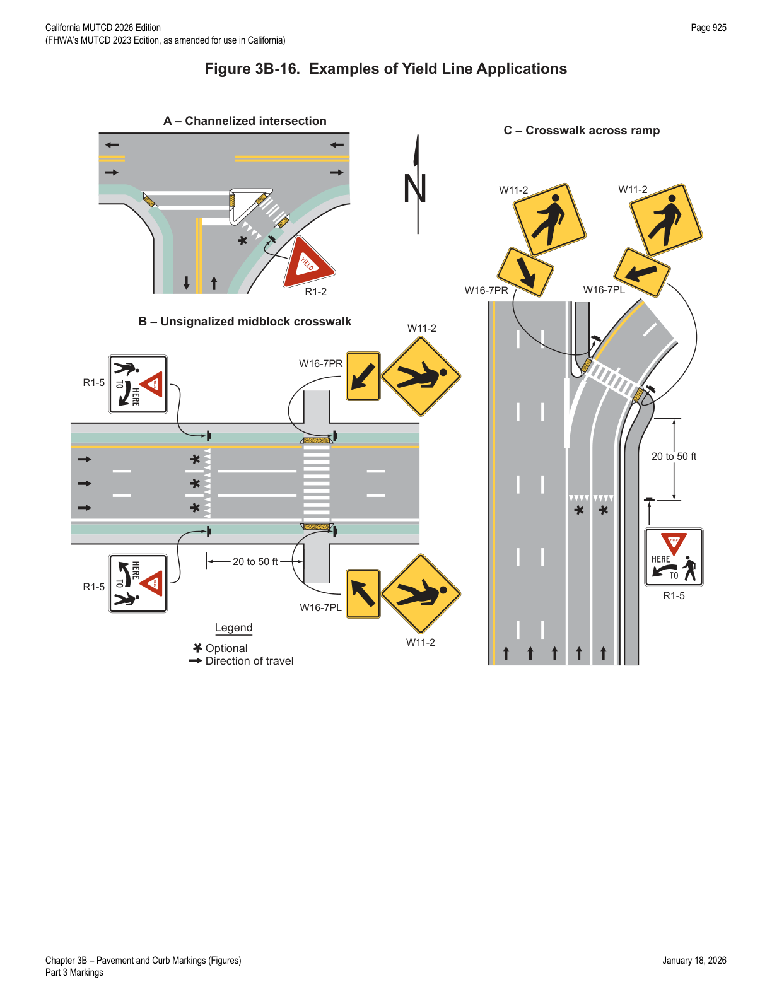
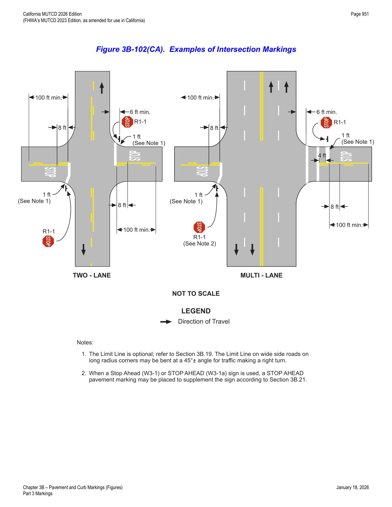
3B.20Word, Symbol, and Arrow Pavement Markings – General
- 01Word, symbol, and arrow markings on the pavement are used for the purpose of regulating, warning, or guiding traffic. These pavement markings can be helpful to road users in some locations by supplementing signs and providing additional emphasis for important regulatory, warning, or guidance messages, because the markings do not require diversion of the road user's attention from the roadway surface. Symbol messages are preferable to word messages. Examples of standard word and arrow pavement markings are shown in Figures 3B-17 and 3B-21, respectively.
- 01aNormally, pavement word and symbol markings supplement standard signing.
- 02Word, symbol, and arrow pavement markings may be used as determined by engineering judgment to supplement signs and/or to provide additional emphasis for regulatory, warning, or guidance messages provided by other devices.
- 03Section 8C.04 contains information for arrow pavement markings in the vicinity of grade crossings.
- 04Word, symbol, and arrow markings shall be white, except as otherwise provided in this Section.
- 05Pavement marking letters, numerals, symbols, and arrows shall be installed in accordance with the design details in the Pavement Markings chapter of the "Standard Highway Signs" publication (see Section 1A.05).
- 05aRefer to Caltrans' Standard Plans for pavement marking letters, numerals, and symbols. Refer to Section 1A.05 for information regarding this publication.
- 06Word, symbol, and/or arrow markings that are grouped together to formulate one interrelated message should not exceed three lines of information.
- 07Except for the two opposing white arrows of a two-way left-turn lane marking (see Figure 3B-7) and the pavement word marking messages described in Items B and D of Paragraph 2 of Section 3B.26, the longitudinal space between word, symbol, and/or arrow markings that are used together to formulate one interrelated message should be at least four times the height of the characters for low-speed roads, but not more than ten times the height of the characters under any conditions.
- 08Except for the SCHOOL word marking (see Section 7C.02), pavement word, symbol, and arrow markings should be no more than one lane in width.
- 09Pavement word, symbol, and arrow markings should be proportionally scaled to fit within the width of the facility upon which they are applied.
- 10On narrow, low-speed shared-use paths, the pavement words, symbols, and arrows may be smaller than suggested, but to the relative scale.
- 11On roadways where the operating speed is less than 25 mph, word, symbol, and arrow markings may be proportionally reduced by 25 percent.
3B.21Word Pavement Markings
- 01Letters and numerals should be 6 feet or more in height, except as provided in Section 9E.01 for the BIKE LANE word pavement marking and in Section 9E.15 for a bicycle detector symbol and WAIT HERE FOR GREEN word pavement marking.
- 02If a pavement marking word message consists of more than one line of information, it should read in the direction of travel. The first word of the message should be nearest to the road user.
- 03The word STOP shall not be placed on the pavement in advance of a stop line, unless every vehicle is required to stop at all times.
- 03aA STOP pavement legend should be placed on all but minor approaches to State highways not controlled by signals.
- 03bPavement markings with appropriate figures may be used to supplement speed limit signs. Refer to Section 2B.21.
- 04Where through lanes approaching an intersection become mandatory turn lanes, ONLY word pavement markings (see Figure 3B-17) should be used in addition to signs (see Sections 2B.27 and 2B.28) and the required lane-use arrow markings (see Section 3B.23).
- 05The ONLY word marking may be used to supplement the lane-use arrow markings in lanes that are designated for the exclusive use of a single movement such as turn bays.
- 06The ONLY word marking may be used to supplement a preferential lane word or symbol marking (see Section 3E.03).
- 07On roadways where the operating speed is less than 25 mph, word markings may be proportionally reduced by 25 percent.
- 08The ONLY word marking shall not be used in a lane that is shared by more than one movement.
- 09Electric vehicle charging stations in off-street locations may be marked with a white, twelve-inch high EV CHARGING ONLY pavement legend (refer to Figure 3B-106(CA)) to supplement Electric Vehicle Charging Station signs in Sections 2B.52 and 2I.03.
- 10Each electric vehicle charging station designated for Van Accessible, Standard Accessible, and Ambulatory electric vehicle charging stations shall be marked with a white, twelve-inch high EV CHARGING ONLY pavement legend (refer to Figure 3B-106(CA)) to supplement signs, per CBC, Chapter 11B, Section 812.9, and Figure 11B-812.9.
- 11The authority for local agencies to regulate accessible parking, including designated EV charging stations, is provided by CVC § 22511. The provisions apply to parking areas open to public travel, such as rest stops. Refer to Section 1B.01.
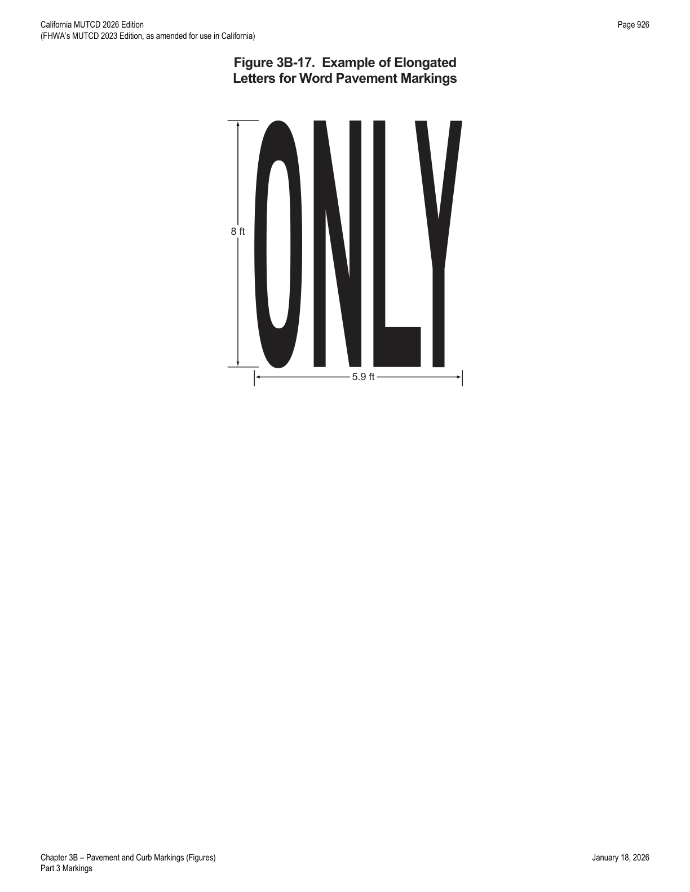
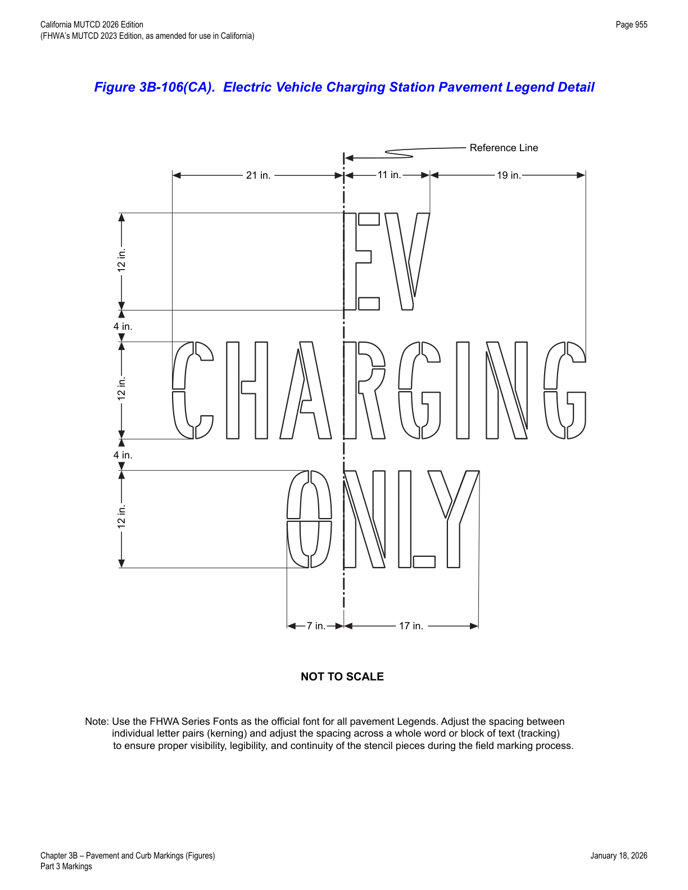
3B.22Symbol Pavement Markings
- 01Section 3E.03 contains information on the diamond-shaped symbol for high-occupancy vehicle (HOV) lanes.
- 02Chapter 9E contains information on symbol markings that can be used for bicycle lanes.
- 04If route sign markings are provided to guide road users, those route sign markings should be provided in option lanes if markings are provided in any lanes.
- 05If two route sign markings are provided in an option lane, they should be placed in sequence and not divided around an optional lane arrow.
- 06Section 3A.03 provides information on route sign colors.
- 07Section 9E.14 contains information on route markers for designated bicycle routes that can be used on shared-use paths.
- 08The International Symbol of Accessibility parking space marking (see Figure 3B-19) should be placed in each parking space designated for use by persons with disabilities.
- 08aThe International Symbol of Accessibility (ISA) parking space marking shall be placed in each parking space within the highway right-of-way (refer to Figure 3B-19).
- 08bThe ISA parking space marking (Figure 3B-19) should be placed in each parking space within the highway right-of-way designated for use by persons with disabilities.
- 09A blue background with a white border shall supplement the wheelchair symbol as shown in Figure 3B-19.
- 09aIf used, new construction of accessible parking spaces within the highway right-of-way and loading and unloading areas shall include pavement marking details shown on Figure 3B-19, or as shown on Caltrans' Standard Plan A90A. The loading and unloading area shall be marked by a border and hatched lines. The border shall be painted blue, and the hatched lines shall be painted a suitable contrasting color to the parking space (blue or white paint is preferred).
- 09bIf used, new construction of accessible parking within the highway right-of-way shall include a blue painted curb, as shown on Caltrans' Standard Plan A90B. If parking within the highway right-of-way designated and designed for persons with disabilities includes a loading and unloading area, it shall be marked by a border and hatched lines. The border shall be painted blue, and the hatched lines shall be painted a suitable contrasting color to the parking space (blue or white paint is preferred).
- 09cLoading and unloading areas shall include the words "NO PARKING" within the blue border and shall be painted in white letters no less than 12 inches high (refer to detail in Figure 3B-19). Refer to California Code of Regulations Title 24, Section 1129B.4.
- 09dProvisions apply to parking areas open to public travel, such as rest stops. Refer to Section 1B.01.
- 10A yield-ahead triangle symbol or YIELD AHEAD word pavement marking may be used on approaches to intersections where the approaching traffic will encounter a YIELD sign at the intersection.
- 11The yield-ahead triangle symbol or YIELD AHEAD word pavement marking shall not be used unless a YIELD sign (see Section 2B.05) is in place at the intersection. The yield-ahead triangle symbol marking shall be as shown in Figure 3B-20.
- 12A pedestrian symbol pavement marking may be used on portions of facilities that are reserved exclusively for pedestrian use, such as where a shared-use path transitions to become separate facilities for different types of users.
Note on Paragraphs 9-9c: the source text carries an internal inconsistency (an "Option:"/"Standard:" label pair immediately preceding Paragraph 9), but the mandatory "shall" language throughout Paragraphs 9-9c is treated here as Standard, consistent with the CBC Chapter 11B cross-reference in Paragraph 9c.
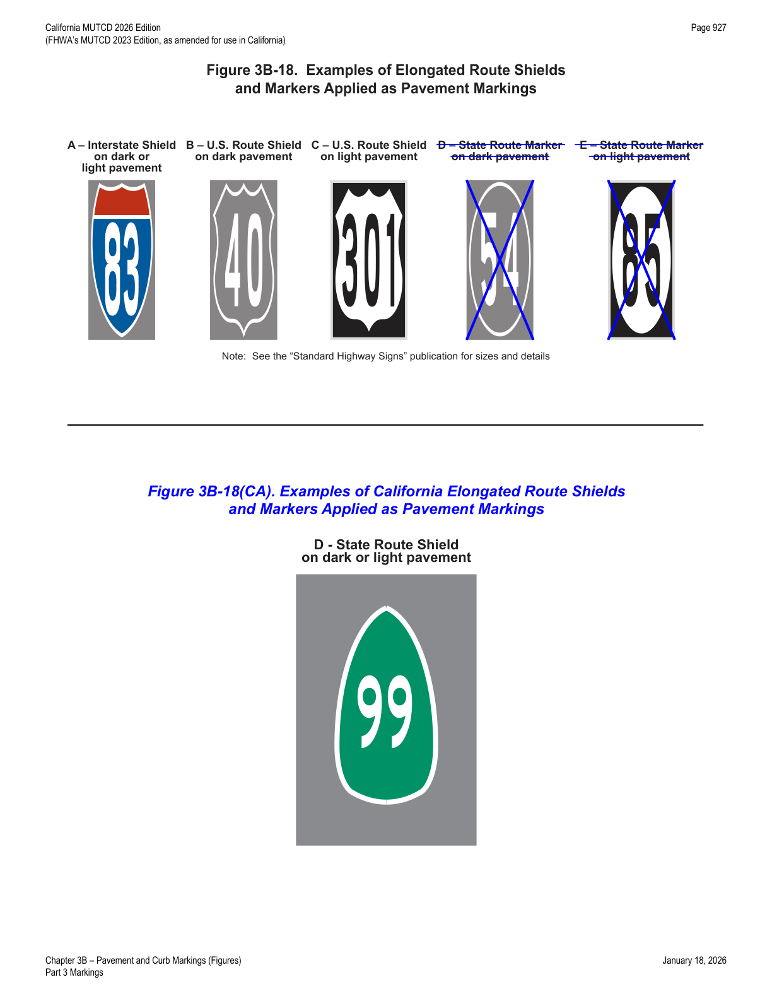
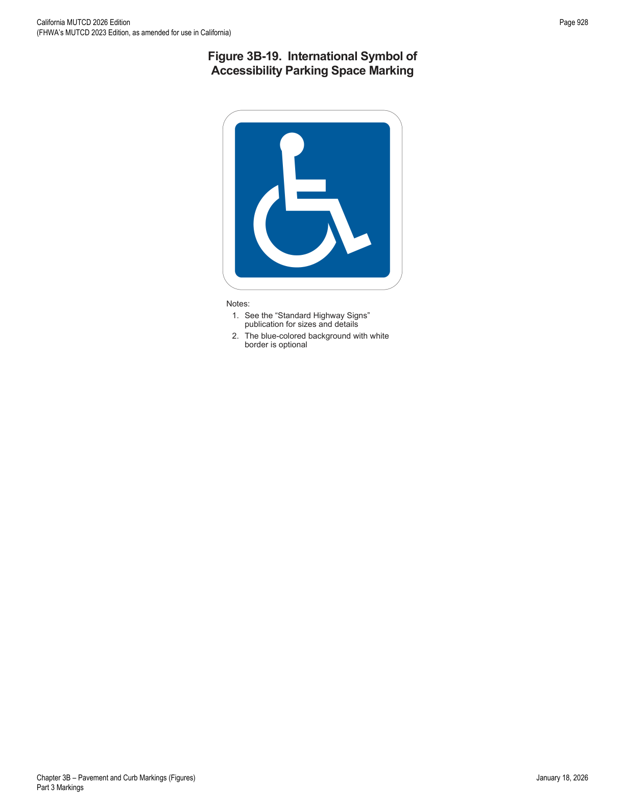
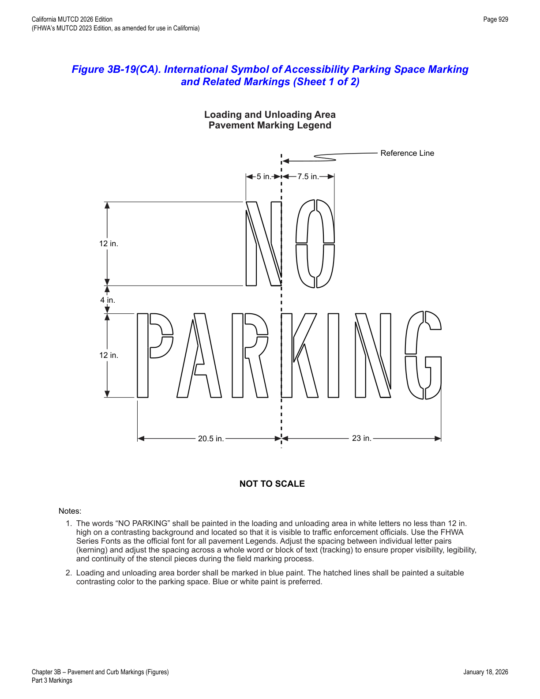
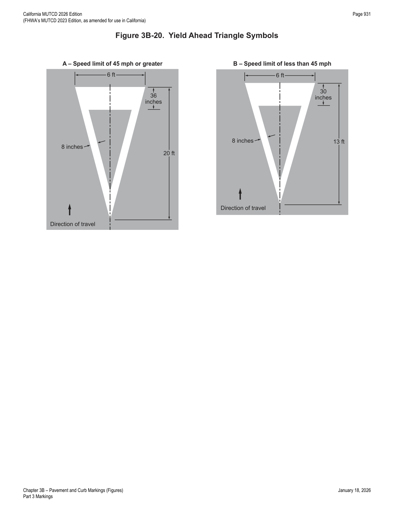
3B.23Lane-Use Arrows
- 01Lane-use arrow markings (see Figure 3B-21) are used to indicate the mandatory or permissible movements in certain lanes (see Figure 3B-22) and in two-way left-turn lanes (see Figure 3B-7).
- 02Section 8C.04 contains information about the placement of lane-use arrow markings in the vicinity of grade crossings.
- 03Lane-use arrow markings should be used in lanes and turn bays designated for the exclusive use of a turning movement, except where engineering judgment determines that physical conditions or other markings (such as a dotted extension of the lane line through the taper into the turn bay) clearly discourage unintentional use of a turn bay by through vehicles. Lane-use arrow markings should also be used in lanes from which movements are allowed that are contrary to the normal rules of the road (see Drawing B in Figure 3B-13).
- 04When used in turn lanes, at least two arrows should be used, one at or near the upstream end of the full-width turn lane and one an appropriate distance upstream from the stop line or intersection (see Drawing A in Figure 3B-12).
- 05Where opposing offset channelized left-turn lanes exist, lane-use arrow markings should be placed near the downstream terminus of the offset left-turn lanes to reduce wrong-way movements (see Figure 2B-20).
- 06An additional arrow or arrows may be used in a turn lane. When arrows are used for a short turn lane, the second (downstream) arrow may be omitted based on engineering judgment.
- 07An arrow at the downstream end of a turn lane can help to prevent wrong-way movements.
- 08Where through lanes approaching an intersection become mandatory turn lanes, turn lane-use arrow markings (see Drawing A in Figure 3B-12 and Figure 3B-21) shall be used and shall be accompanied by standard signs (see Section 2B.28).
- 08aWhere a turning movement is mandatory, an arrow marking accompanied by a regulatory sign shall be used. However, when an additional clearly marked lane is provided for the approach to the turning movement, the sign is not required. Refer to CVC § 22101.
- 08bExamples of entrance/exit ramp terminal signs and pavement markings are shown in Figure 3B-21(CA).
- 08cThe Type V arrows and warning signs, as shown in Figure 3B-103(CA), should be used at locations where road users could perceive that they are on a one-way roadway when, in fact, they are on a two-lane, two-way highway. The following are some typical situations: (A) construction sites where a two-lane highway is being converted to a freeway or an expressway; (B) two-lane, two-way highways where the ultimate freeway or expressway right-of-way has been purchased and grading for the full width has been completed; (C) two-lane, two-way highways following long sections of multi-lane freeway or expressway.
Exit Ramp Arrows
- 08dA minimum of two pavement arrows shall be placed on each freeway exit ramp lane.
- 08eA Type V arrow shall be the first arrow, on the ramp, in the direction of travel when exiting the freeway.
- 08fWhere a mandatory movement is required, a Type I, II, III, IV, VII, or VIII arrow shall be placed with its point approximately 20 feet preceding the limit line, crosswalk, or "STOP" pavement legend. Where no mandatory movement is required, a Type V arrow shall be used at this location.
- 08gAll other additional arrows, when used, shall be a minimum of 24 feet in length.
- 08hAll arrows shall be placed in the center of the lane and spaced approximately 100 feet to 300 feet apart.
- 08iThe actual position and spacing should be determined in the field to provide the optimum visibility for traffic that may attempt to enter the exit ramp in the wrong direction.
- 08jRefer to Figure 3B-21(CA).
Entrance Ramp Arrows
- 08kA minimum of one Type I arrow, not less than 18 feet in length, shall be positioned in the center of each freeway entrance ramp lane so that it is clearly in view of a right-way road user.
- 08lThe distance between arrows, when more than one per lane is needed, should be 100 feet to 300 feet. The Type V arrow should not be used on entrance ramps.
- 08mRefer to Figure 3B-21(CA).
- 08nAdditional information on the signing of ramp terminals is shown in Section 2E.59.
Turn Lane Arrows
- 08oOne directional arrow, a minimum of 8 feet in length, shall be placed in the center of each turning lane near the point of entrance.
- 08pHigh approach speeds may justify the use of a longer arrow. Two or more arrows may be placed in long turning lanes.
- 08qRefer to Figures 3B-7(CA) and 3B-101(CA).
- 08rRefer to Sections 2B.48 and 2E.59 for Wrong-Way Traffic Control at Interchange Ramps.
- 09Where through lanes approaching an intersection become mandatory turn lanes, ONLY word markings (see Figure 3B-17) should be used in addition to signs (see Sections 2B.27 and 2B.28) and the required turn lane-use arrow markings. These signs and markings should be placed well in advance of the turn and should be repeated as necessary to provide the through motorist advance notification to vacate the lane prior to reaching a point where roadway geometrics or a queue of waiting vehicles forces the motorist to make an unintended turn.
- 10On freeways or expressways where a through lane becomes a mandatory exit lane, lane-use arrow markings may be used on the approach to the exit in the dropped lane and in an adjacent optional through-or-exit lane if one exists.
In practice: this Section defines a whole vocabulary of numbered arrow types (Type I, II, III, IV, V, VI, VII, VIII, XI, and the curved-stem CS I-V family) whose exact dimensions are drafted in Figure 3B-21(CA) — Type V is reserved for the first arrow on an exit ramp (or wherever no mandatory movement applies) and is never used on entrance ramps; mandatory-movement arrows (Types I-IV, VII, VIII) point their tip about 20 feet ahead of the limit line, crosswalk, or STOP legend.
| Location | Minimum arrow count / length | Spacing |
|---|---|---|
| Freeway exit ramp lane | Minimum 2 arrows; first arrow (in direction of travel) is Type V; mandatory-movement arrows (I, II, III, IV, VII, VIII) placed ~20 ft ahead of limit line/crosswalk/STOP legend; additional arrows minimum 24 ft | 100–300 ft apart, centered in lane |
| Freeway entrance ramp lane | Minimum 1 Type I arrow, not less than 18 ft long; Type V not used | 100–300 ft apart if more than one |
| Turn lane (conventional intersection) | One directional arrow, minimum 8 ft long, near point of entrance; longer/additional arrows optional for high speeds or long lanes | Engineering judgment |
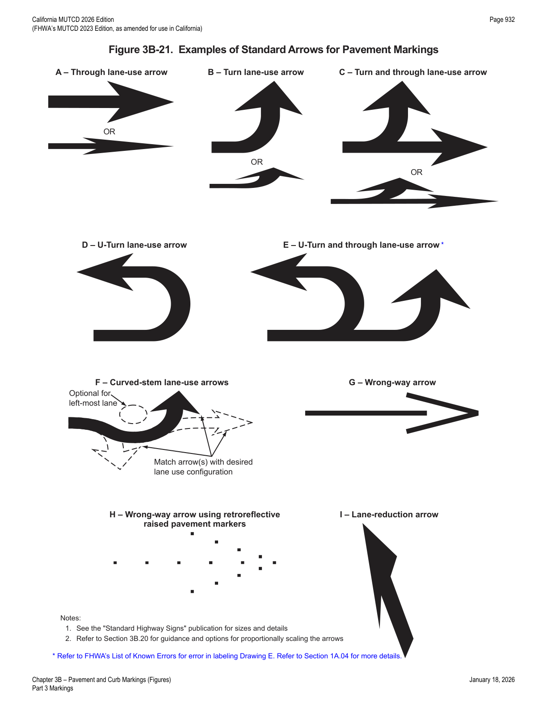
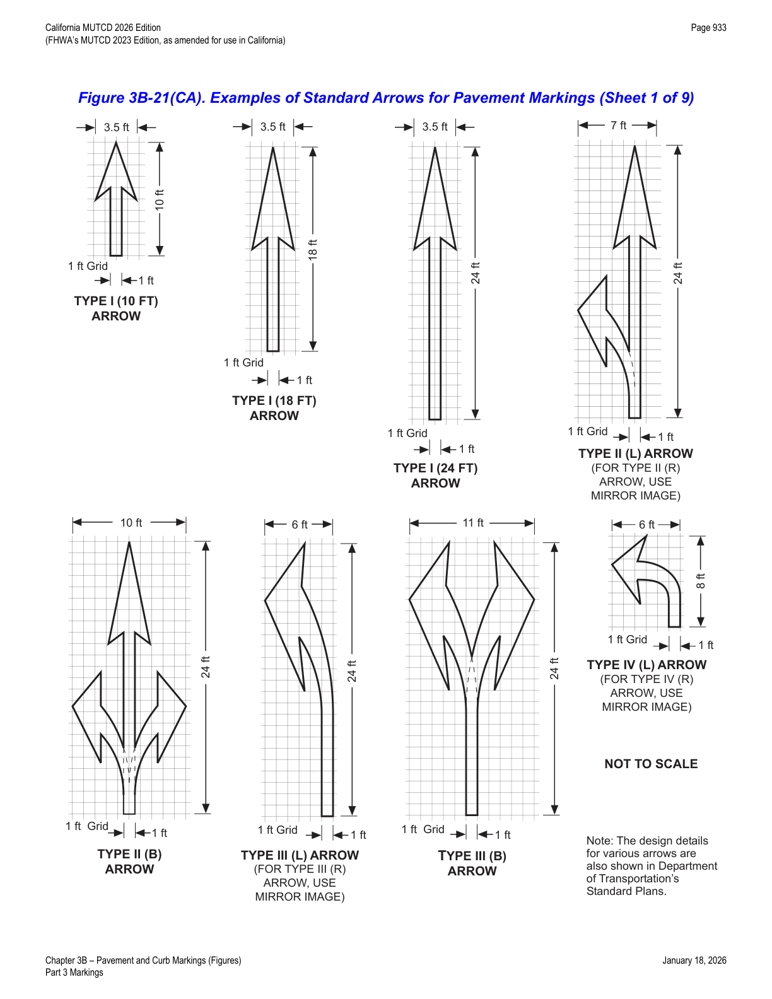
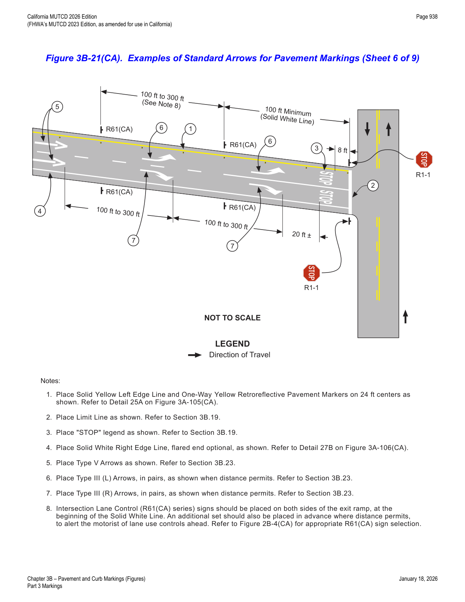
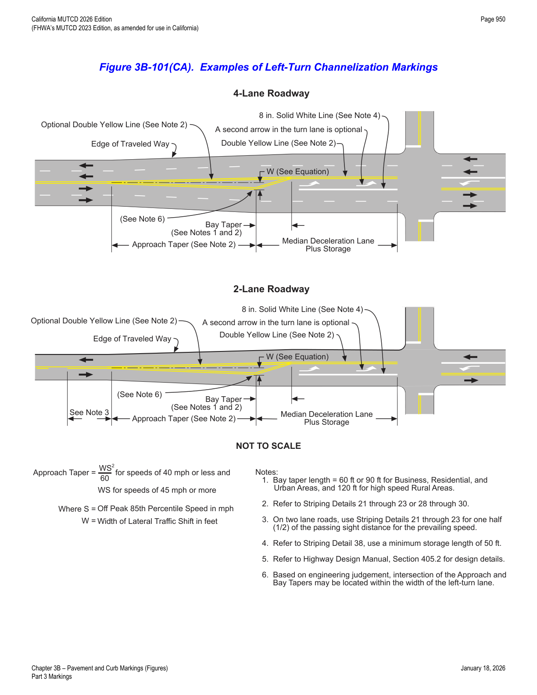
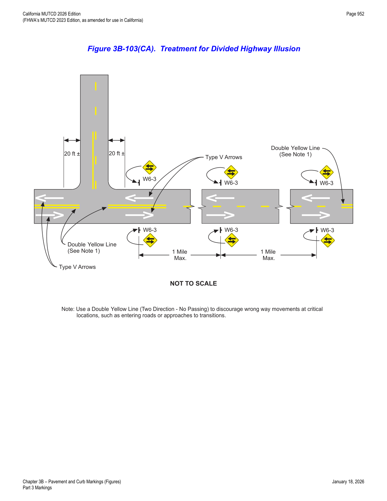
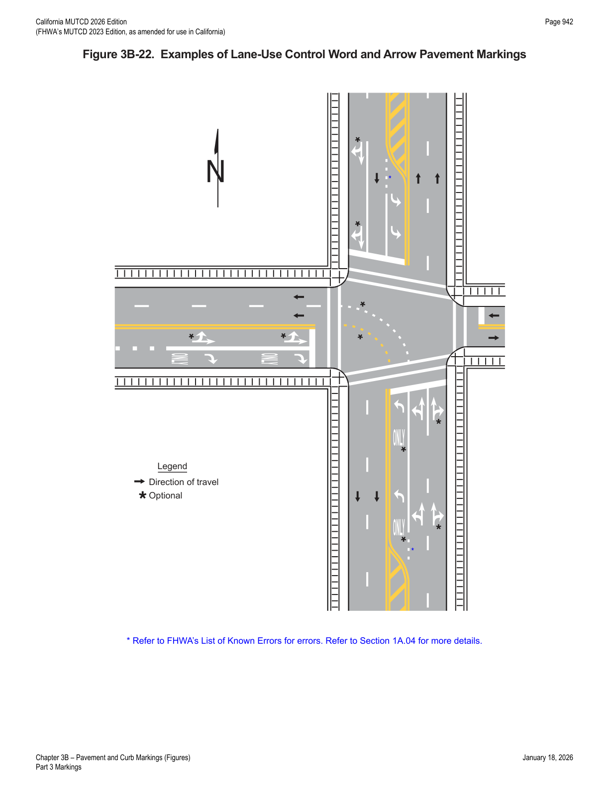
3B.24Wrong-Way Arrows
- 01Where crossroad channelization or ramp geometrics do not make wrong-way movements difficult, the appropriate lane-use arrow should be placed in each lane of an exit ramp near the crossroad terminal where it will be clearly visible to a potential wrong-way road user (see Figure 2B-15).
- 02The wrong-way arrow markings shown in Drawing G in Figure 3B-21 may be placed near the downstream terminus of a ramp as shown in Figure 2B-15 and in Drawing A in Figure 2B-16, or at other locations where lane-use arrows are not appropriate, to indicate the correct direction of traffic flow and to discourage drivers from traveling in the wrong direction.
3B.25Chevron and Diagonal Markings
- 01Chevron or diagonal markings are used to discourage travel on certain paved areas, such as shoulders, neutral areas, and flush median islands.
- 01aFor chevron markings in exit gore areas, refer to Section 3B.11.
- 02Chevron and diagonal markings may be used: (A) on approaches to obstructions in the roadway (see Sheet 2 of Figure 3B-15); (B) for channelized travel paths on approaches to intersections; (C) in buffer spaces between preferential lanes and general-purpose lanes (see Drawing A in Figure 3E-2); (D) in the neutral area gores (see Figures 3B-9 through 3B-11); (E) in the neutral area of bifurcations created from open-road tolling lanes that bypass a conventional toll plaza; (F) in the neutral areas at access and egress points to and from a managed-lane facility (see Figures 2G-8, 2G-10, 2G-22, and 2G-23); and (G) in the neutral areas of islands.
- 03Chevron markings may be supplemented with white retroreflective or internally illuminated raised pavement markers (see Section 3B.16) for enhanced nighttime visibility.
- 04Section 5B.02 contains information on chevron markings for driving automation system considerations.
- 06Diagonal markings for opposing directions of traffic may be used: (A) on approaches to obstructions in the roadway (see Drawings A and B in Figure 3B-15); (B) in flush median islands between double solid yellow center line markings (see Figure 3B-5); and (C) in buffer spaces between preferential lanes and general-purpose lanes (see Drawing D in Figure 3E-4).
- 07Diagonal markings may be used on paved shoulders or in no-parking zones, or other locations for special emphasis.
- 08When diagonal markings are used between opposing directions of traffic or on the left shoulder of a one-way or divided roadway, they shall be yellow and slant away from traffic in the adjacent travel lanes, as shown in Figures 3B-2 and 3B-5, and Drawings A and B in Figure 3B-15.
- 09When diagonal markings are used on the right shoulder or in no-parking zones (see Figure 3B-23), they shall be white and slant away from traffic in the adjacent travel lane.
- 10Except as provided in Paragraph 11 of this Section, chevrons and diagonal markings should be at least 12 inches wide for roadways having a speed limit of 45 mph or greater, and at least 8 inches wide for roadways having a speed limit of less than 45 mph. The longitudinal spacing of the chevrons or diagonal lines should be determined by engineering judgment considering factors such as speeds and desired visual impacts. The chevrons and diagonal lines should form an angle of approximately 30 to 45 degrees with the longitudinal lines that they intersect.
- 11Diagonal markings used in no-parking zones or on roadways with operating speeds of less than 25 mph may be 4 inches wide (see Figure 3B-23).
- 12Diagonal and chevron markings should be used, when in the opinion of an engineer, it is necessary to add emphasis or to discourage vehicular travel upon a paint-formed roadway feature such as an unusually wide shoulder area, a pedestrian refuge island, or a traffic divisional or channelization island.
- 13Diagonal lines, when used, should be installed between an edge line and a traffic island, or between pairs of double yellow lines.
- 14Chevron markings, when used, should be installed between channelizing lines for traffic flows in the same direction.
- 15The applicable channelizing lines for chevron markings are shown in Figure 3A-110(CA), Details 36, 36A, and 36B, and pairs of lines shown in Figure 3A-112(CA), Details 38 and 38A.
- 16The diagonal lines or chevron markings are normally 12 inches wide.
- 17Diagonal lines and chevrons shall be the same color as the line or lines to which they connect and shall point at a 45-degree forward angle.
- 18Diagonal lines or chevrons, if used, shall be the same color as the edge line.
- 19The spacing between these lines may vary from 1 foot in a pedestrian crosswalk to 200 feet for vehicular traffic.
In practice: color follows function, not a fixed rule — diagonal/chevron markings always match the color of the line they connect to or extend (yellow between opposing-direction flows and on left shoulders of one-way/divided roads; white on right shoulders, no-parking zones, and channelizing/neutral areas), and width steps from a 12-inch default (≥45 mph) down to 8 inches (<45 mph) or as low as 4 inches in no-parking zones/<25 mph areas.
3B.26Do Not Block Intersection Markings
- 00Refer to CVC § 22526 for entering an intersection, a rail crossing, or a marked crosswalk.
- 01Do Not Block Intersection markings may be used to mark the edges of an intersection area that is in close proximity to a signalized intersection, railroad crossing, or other nearby traffic control that might cause vehicles to stop within the intersection and impede other traffic entering the intersection. If authorized by law, Do Not Block Intersection markings with appropriate signs may also be used at other locations.
- 02If used, Do Not Block Intersection markings (see Figure 3B-24) shall consist of one of the following alternatives: (A) wide solid white lines that outline the intersection area that vehicles must not block; (B) wide solid white lines that outline the intersection area that vehicles must not block and a white word message such as DO NOT BLOCK or KEEP CLEAR; (C) wide solid white lines that outline the intersection area that vehicles must not block and white cross-hatching within the intersection area; or (D) a white word message, such as DO NOT BLOCK or KEEP CLEAR, within the intersection area that vehicles must not block.
- 03Do Not Block Intersection markings shall be accompanied by one or more DO NOT BLOCK INTERSECTION (DRIVEWAY) (CROSSING) (R10-7) signs (see Section 2B.59), one or more DO NOT STOP ON TRACKS (R8-8) signs (see Section 8B.07), or one or more similar signs.
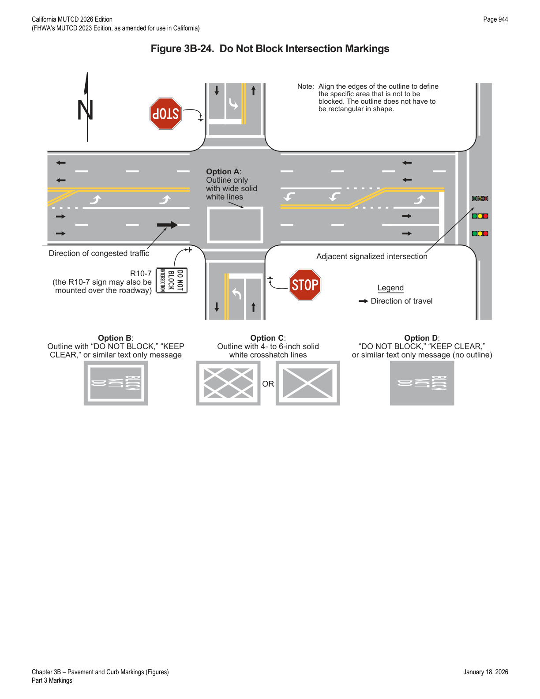
3B.27Parking Space Markings
- 01On-street parking space markings shall be white.
- 02Examples of on-street parking space markings are shown in Figure 3B-23.
- 03Blue lines may supplement white parking space markings of each parking space designated for use only by persons with disabilities (see Figure 3B-23).
- 04Additional parking space markings for the purpose of designating spaces for use only by persons with disabilities are discussed in Section 3B.22 and illustrated in Figure 3B-19.
- 05Refer to CVC §§ 22500 through 22522 for parking space markings.
- 06Refer to Section 2B.45 for Parking Signs.
Policy on Parking Restrictions
- 07Local authorities may, by ordinance, provide for the establishment of parking meter zones and cause streets and highways to be marked with white lines designating parking spaces. Refer to CVC § 22508.
- 08No ordinance or resolution of local authorities shall apply to any state highway until the proposed ordinance or resolution has been presented to, and approved in writing by, the Department of Transportation. Refer to CVC § 21960(c).
- 09The desirable dimensions of parking meter stalls are 8 feet by 24 feet with a minimum length of 20 feet.
- 10At signalized intersections, parking should be prohibited for a minimum of 30 feet on the near side and one stall length on the far side. Refer to Figure 3B-23(CA).
- 11Stopping, standing, or parking of a vehicle within 20 feet of the vehicle's approach side of any unmarked or marked crosswalk, or 15 feet of any crosswalk where a curb extension is present, is prohibited. Refer to CVC § 22500.
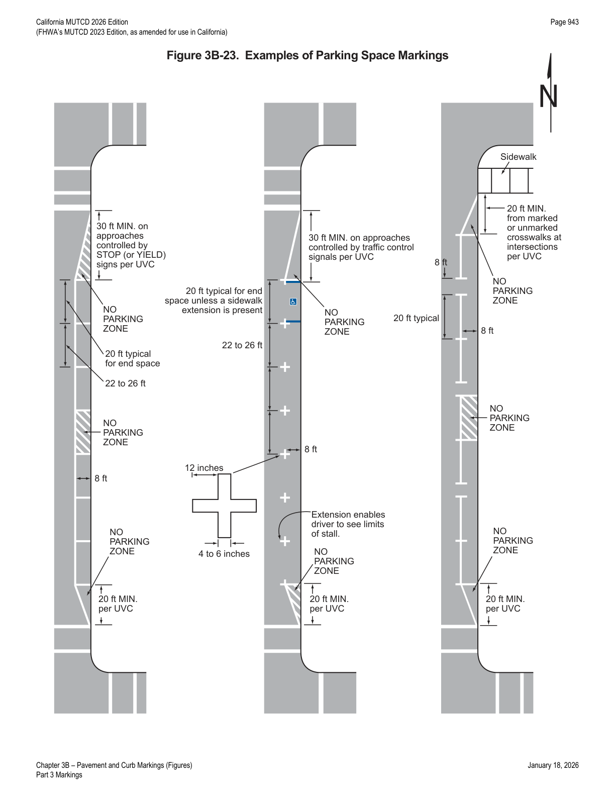
3B.28Speed Reduction Markings
- 01Speed reduction markings (see Figure 3B-25) are transverse markings that are placed on the roadway within a lane (along both edges of the lane) in a pattern of progressively reduced spacing to give drivers the impression that their speed is increasing.
- 02Speed reduction markings have been shown to enhance safety around curves and locations with a history of run-off-the-road crashes when applied in combination with horizontal alignment warning signs (see Section 2C.05).
- 03Speed reduction markings may be placed in advance of an unexpectedly severe horizontal or vertical curve or other roadway feature where drivers need to decelerate prior to reaching the feature and where the desired reduction in speeds has not been achieved by the installation of warning signs and/or other traffic control devices.
- 04If used, speed reduction markings should be reserved for unexpected curves or other usages based on engineering judgment. Speed reduction markings should not be used on long tangent sections of roadway or in areas frequented mainly by local or familiar drivers, such as school zones. If used, speed reduction markings should supplement the appropriate warning signs and other traffic control devices and should not substitute for these devices.
- 05Speed reduction markings shall be a series of white transverse lines on both sides of the lane that are perpendicular to the center line, edge line, or lane line.
- 06The longitudinal spacing between the markings should be progressively reduced from the upstream to the downstream end of the marked portion of the lane.
- 07Speed reduction markings should not be greater than 12 inches in width, and should not extend more than 18 inches into the lane.
- 08Speed reduction markings shall be used only in lanes that have a longitudinal line (center line, edge line, or lane line) on both sides of the lane.
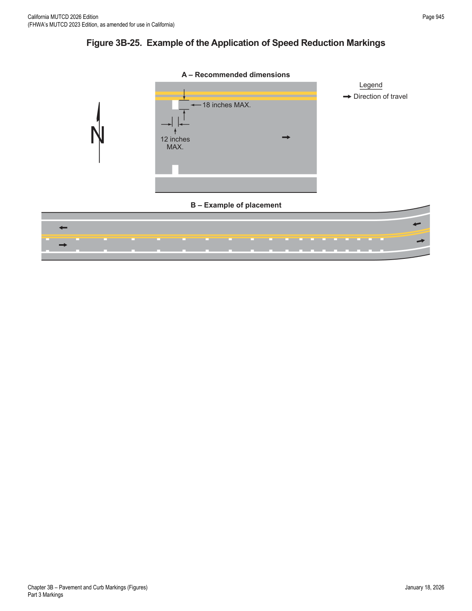
3B.29Speed Hump and Speed Table Markings
- 00According to CVC § 440, speed humps or bumps are not official traffic control devices.
- 01If speed hump markings are used, they shall be a series of white markings placed on a speed hump to identify its location. If markings are used for a speed hump that does not also function as a crosswalk or speed table, the markings shall comply with Option A, B, or C shown in Figure 3B-26. If markings are used for a speed hump that also functions as a crosswalk or speed table, the markings shall comply with Option A or B shown in Figure 3B-27.
- 02Where used, center line markings, lane line markings, and edge lines may be discontinued on the profile of the speed hump.
- 03Where a speed hump or a speed table specifically incorporates a crossing movement for pedestrians, bicyclists, or equestrians, and functions as a raised crosswalk, crosswalk markings (see Chapter 3C) shall be provided.
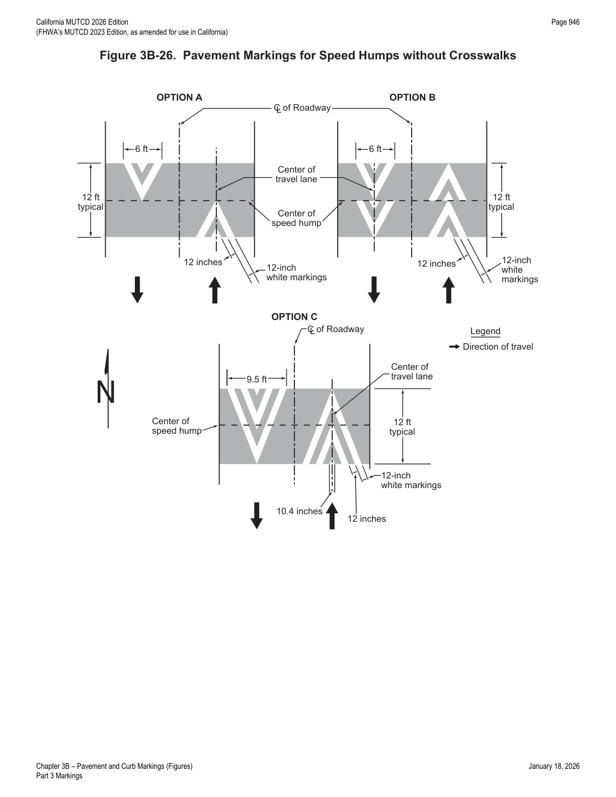
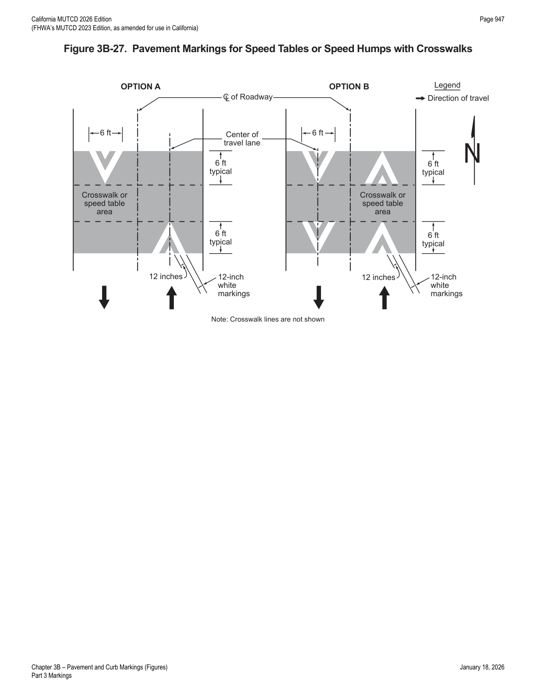
3B.30Advance Speed Hump and Speed Table Markings
- 01Advance speed hump markings (see Figure 3B-28) may be used in advance of speed humps or other engineered vertical roadway deflections such as dips where added visibility is desired or where such deflection is not expected.
- 02Advance word pavement markings such as BUMP or HUMP (see Section 3B.20) may be used on the approach to a speed hump either alone or in conjunction with advance speed hump markings. Appropriate advance warning signs may be used in compliance with Section 2C.27.
- 02aRaised retroreflective pavement markers may be used to supplement advance speed hump markings (refer to Figure 3B-28).
- 02bProvisions for raised pavement markers supplementing other markings are contained in Sections 3B.14 and 3B.16.
- 03If advance speed hump or speed table markings are used, they shall be a series of eight white 12-inch transverse lines that become longer and are spaced closer together as the vehicle approaches the speed hump or other deflection. If advance markings are used, they shall comply with the detailed design shown in Figure 3B-28.
- 04If used, advance speed hump markings should be installed in each approach lane.
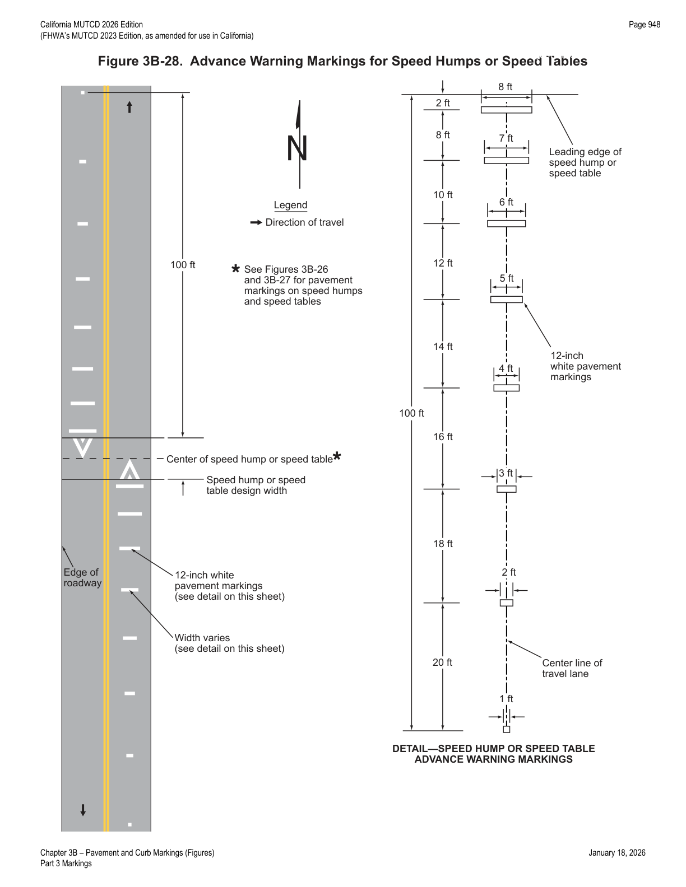
3B.31Markings for a Diamond Interchange with a Transposed Alignment Crossroad
- 01Markings used in a diverging diamond interchange with a transposed alignment crossroad can be advantageous for minimizing wrong-way movements. The potential for wrong-way movements is greatest at the crossover intersections where the alignment becomes transposed.
- 01aDiverging diamond interchanges, also known as double-crossover diamond interchanges, include directional crossovers on either side of the interchange that transpose the crossroad, which results in vehicles traveling on the left-hand side of the street or highway between the crossover intersections.
- 02On the transposed alignment, each direction shall be considered a one-way roadway whereas the edge line convention shall be in accordance with Section 3B.09. Both yellow and white edge lines shall be used.
- 03A lane-use arrow (see Section 3B.23) shall be used in each approach lane at the crossover intersection.
- 04Section 3C.11 contains information on crosswalks and pedestrian movements for diverging diamond interchanges with a transposed alignment crossroad.
- 05Flush median islands (see Section 3J.03) shall not be used to divide the inverted flow of traffic.
- 06Edge line and lane line extensions (see Section 3B.11) should be provided through the crossing points.
- 07Figure 3B-29 illustrates an example of pavement markings for a diverging diamond interchange with a transposed alignment crossroad.
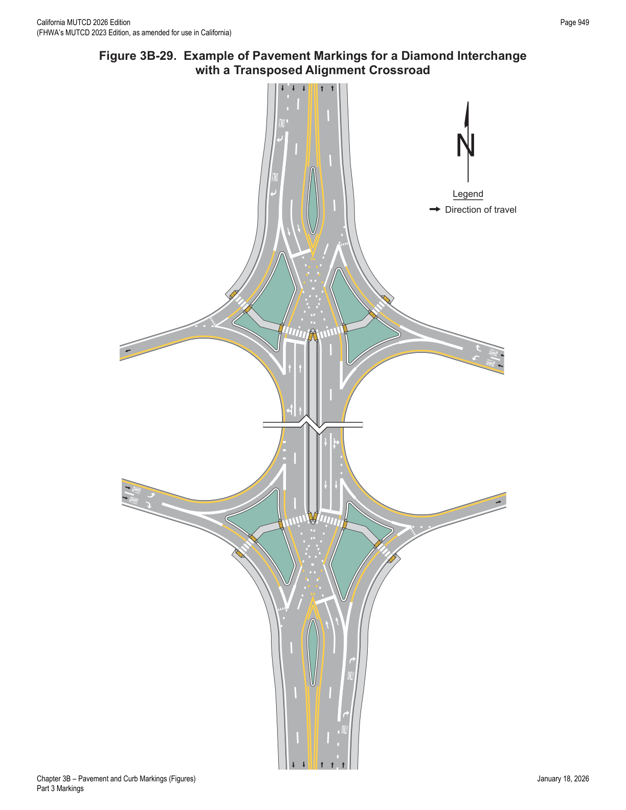
3B.101(CA)Turnouts
- 01Paved turnouts should be marked with an 8-inch-wide single solid white line between the through lane and the turnout. The line should not extend through the entry and exit areas. Refer to Figure 3B-105(CA) and Caltrans' Highway Design Manual, Section 204.5(4). Refer to Section 1A.05 for information regarding this publication.
- 02The right edge line should be dropped throughout the length of the turnout.
- 03Turnout length may be increased 100 feet on downgrades over 3%.
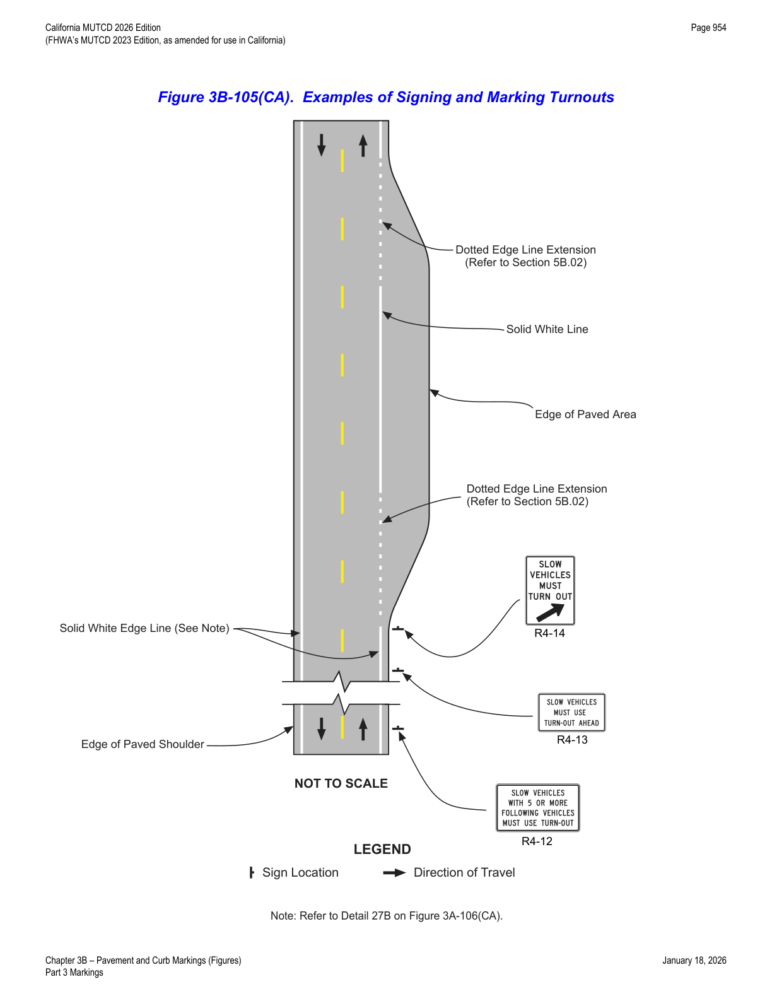
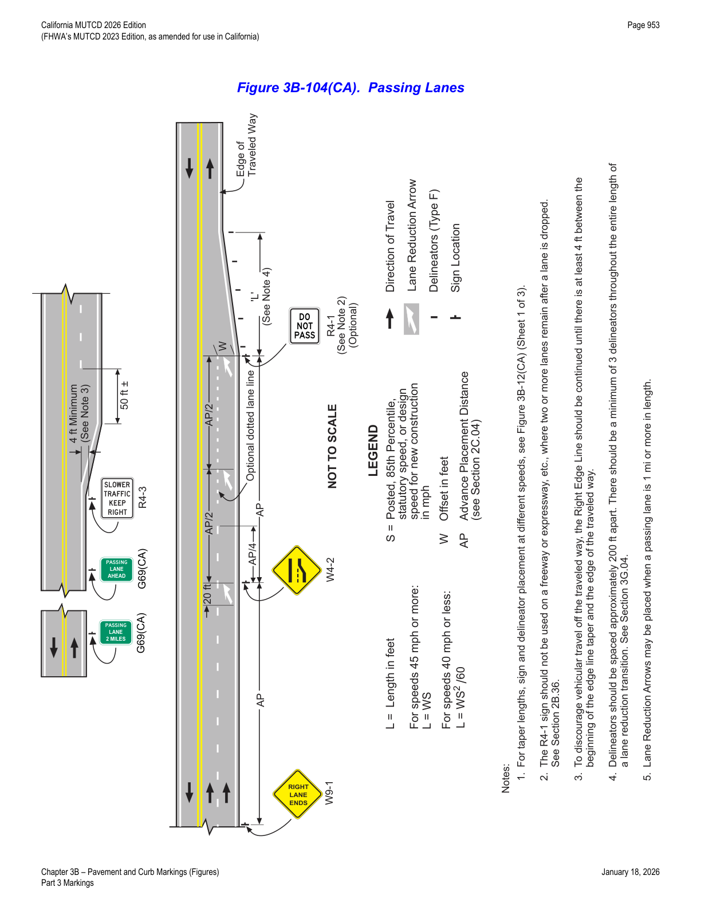
★ Key Takeaways — Chapter 3B
- Center lines are always yellow and take one of three forms (two-direction passing, one-direction no-passing, two-direction no-passing); a single solid yellow line is never used alone as a center line. Warrant thresholds step from mandatory (20 ft/6,000 ADT urban, 3+ lanes) to recommended (20 ft/4,000 ADT urban, 18 ft/3,000 ADT rural) to discretionary judgment below 16 feet.
- Lane lines separating same-direction traffic are white: broken where crossing is permitted, solid where discouraged, double solid where prohibited; dotted white lines mark non-continuing lanes (deceleration/acceleration lanes, lane drops) and are built from a defined vocabulary of normal/wide widths and 3-ft/9-ft or 2-ft/2-to-6-ft segment-gap patterns.
- Edge lines are white on the right (solid, 4-6 in. local / 6 in. State) and yellow on the left of divided highways/one-way roadways/ramps; mandatory on freeways, expressways, and rural arterials meeting width/ADT thresholds; exit ramps get enhanced retroreflective marker spacing (120 ft setback, then 12-ft then 6-ft centers) as a wrong-way-crash countermeasure.
- Raised pavement markers follow a single spacing unit "N" (one broken-line segment plus one gap) defined in Section 3B.14 and reused throughout Sections 3B.15-3B.17 for positioning-guide, supplementing, and substituting applications, with color always matching the marking they serve.
- Curb marking colors are fixed by CVC §21458 (red = no stop/stand/park; yellow = load/unload; white = passenger load/mail; green = time-limited; blue = disabled parking) and require an underlying local ordinance.
- Stop lines (solid white, 12-24 in. wide) and yield lines (rows of solid white isosceles triangles, 12-24 in. base, height = 1.5× base) are mutually exclusive by device type — stop lines pair only with STOP-type devices/signals, yield lines only with YIELD-type devices — and "limit line" is legally synonymous with "stop line" under CVC §377.
- Chevron and diagonal markings, arrow types (Type I through XI and curved-stem CS I-V), speed reduction markings, and speed hump/table markings each have specific dimensional standards (widths from 4 to 12+ inches, arrow spacing of 100-300 ft, transverse line counts of 8 for advance speed hump warnings) that must be selected from the Figure 3A-101(CA) through 3A-114(CA) and 3B-series detail sheets.